6 Управление операционной системой «Ак Шумкар»¶
Примечание
В этой главе описаны все возможные опции меню.
Однако не все модели устройств поддерживают все эти параметры меню. обзор модели предоставляет информацию о том, доступна ли конкретная функция в используемой модели устройства.
6.1 Общая информация¶
6.1.1 Ключ подписки AK-SHUMKAR ENTERPRISE FEED¶
При покупке «АК-ШУМКАР» предварительно устанавливается уникальный ключ подписки «АК-ШУМКАР ENTERPRISE FEED», который предоставляет устройству доступ к сервису подачи «Ак Шумкар». Ключ подписки используется только в целях авторизации, а не для выставления счетов или шифрования.
Примечание
Модель АК-ШУМКАР БЕЙСИК не поставляется с предустановленным ключом подписки.
Ключ подписки индивидуален для каждого устройства и не может быть установлен более чем на одном устройстве.
Если ключ подписки будет скомпрометирован (например, попадет в руки третьих лиц), законному владельцу ключа подписки никакого ущерба не будет. «Ак Шумкар» деактивирует скомпрометированный ключ, предотвращая его дальнейшее несанкционированное использование. Запасной ключ может быть выдан бесплатно.
Сброс к заводским настройкам приведет к удалению ключа подписки с устройства, и его придется установить заново. Если планируется возврат к заводским настройкам, обратитесь в Команда поддержки Ак Шумкар чтобы получить копию ключа подписки.
6.1.2 Концепция авторизации¶
Устройство предлагает два различных уровня доступа:
- Уровень пользователя – через веб-интерфейс или GMP
Уровень пользователя доступен через веб-интерфейс или API протокола управления «Ак Шумкар» (GMP).
- Системный уровень – через меню администрирования ГСН
Системный уровень доступен только через консоль или протокол защищенной оболочки (SSH).
6.1.2.1 Доступ на уровне пользователя¶
Уровень пользователя обеспечивает доступ к функциям сканирования и управления уязвимостями, а также поддерживает администрирование пользователей, групп и разрешений.
Доступ к уровню пользователя возможен либо через веб-интерфейс (см. Главы 7 и 8) или через API протокола управления «Ак Шумкар» (GMP) (см. главу 14).
Примечание
По умолчанию учетная запись уровня пользователя не настроена при доставке устройства компанией «Ак Шумкар» или после сброса настроек к заводским. Необходимо создать хотя бы одну такую учетную запись, так называемого «веб-администратора», через меню администрирования ГОС (см. гл. 6.2.1.3).
Помимо первоначального веб-администратора, есть два варианта создания веб-пользователей:
- Через веб-интерфейс
Веб-пользователей с различными ролями и разрешениями можно создавать через веб-интерфейс. У этих пользователей есть владелец, который является пользователем, который их создал. Управлять ими можно как через веб-интерфейс, так и через меню администрирования ГОС.
- Через меню администрирования ГСН
Пользователи, созданные через меню администрирования ГОС, всегда имеют Админ роль. Эти пользователи не имеют владельца и являются так называемыми «глобальными объектами». Иногда их также называют «пользователями глобальной сети». Управлять ими можно только через меню администрирования ГОС или суперадминистратором.
Примечание
Для моделей приборов АК-ШУМКАР 35 и АК-ШУМКАР 25В доступ на уровне пользователя не поддерживается. Этими устройствами необходимо управлять с помощью главного устройства.
6.1.2.2 Доступ на уровне системы¶
Системный уровень обеспечивает доступ к администрированию ОС «Ак Шумкар» (ГОС). Поддерживается только одна учетная запись системного администратора. Системный администратор не может изменять системные файлы напрямую, но может дать команду системе изменить конфигурации.
Управление ГСН осуществляется с помощью графического интерфейса на основе меню (меню администрирования ГОС). Командную строку (оболочку) не обязательно использовать для задач настройки или обслуживания. Доступ к оболочке предоставляется только в целях поддержки и устранения неполадок.
Для доступа к системному уровню требуется либо доступ к консоли (последовательный порт, гипервизор или монитор/клавиатура), либо подключение через SSH. Для использования SSH требуется сетевое подключение и должна быть включена служба SSH (см. главу 6.2.4.4).
При доставке устройства компанией «Ак Шумкар» или после сброса настроек к заводским настройкам учетная запись и пароль системного администратора по умолчанию предварительно настроены. При первоначальной настройке необходимо изменить пароль системного администратора (см. гл. 6.2.1.1).
6.1.2.2.1 Доступ к меню администрирования GOS с помощью консоли¶
После включения прибор загружается. За процессом загрузки можно следить через консоль.

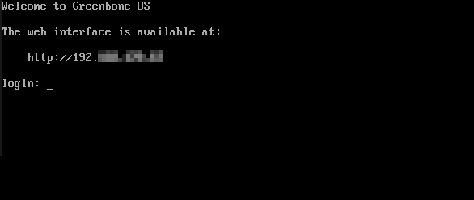
Рис. 6.1 Запрос на вход в устройство¶
После завершения процесса загрузки отображается приглашение для входа в систему (см. Рис. 6.1).
6.1.2.2.2 Доступ к меню администрирования GOS с помощью SSH¶
Примечание
При доставке устройства компанией «Ак Шумкар» или после сброса настроек к заводским настройкам доступ по SSH может быть отключен, и его необходимо сначала включить с помощью консоли (см. главу 6.2.4.4). Для SSH требуется сетевое соединение (см. главу 6.2.2.3).
Linux, macOS и Unix-подобные системы
Чтобы установить SSH-соединение в Linux, macOS или Unix-подобных системах, командную строку можно использовать следующим образом:
$ ssh admin@<appliance>
Заменять <устройство> с IP-адресом или доменным именем устройства.
Ключ хоста можно проверить, отобразив его отпечаток пальца следующим образом:
Войдите в меню администрирования ГОС.
Выбирать Настройка и нажмите Входить.
Выбирать Услуги и нажмите Входить.
Выбирать SSH и нажмите Входить.
Выбирать Отпечаток пальца и нажмите Входить.
→ Отображается отпечаток пальца.
Microsoft Windows
Чтобы установить SSH-соединение в системах Microsoft Windows, можно использовать инструменты PuTTY или smarTTY. В Microsoft Windows Server 2019, Microsoft Windows 10 Build 1809 или более поздней версии можно установить клиентский компонент OpenSSH для доступа к SSH через командную строку.
6.1.3 Использование меню администрирования GOS¶
В меню администрирования ГСН можно перемещаться с помощью клавиатуры.
Для выбора меню используются клавиши со стрелками на клавиатуре.
Прессование Входить используется для подтверждения текущего выбора меню и продолжения.
Прессование Космос используется для включения/выключения переключателей.
Из текущего меню можно выйти, нажав Esc.
В большинстве случаев изменения, внесенные в меню администрирования ГСН, не активируются сразу. Вместо этого опция меню Сохранять добавляется ниже других опций (см. Рис. 6.2). Выбирать Сохранять и нажмите Входить чтобы сохранить изменения.

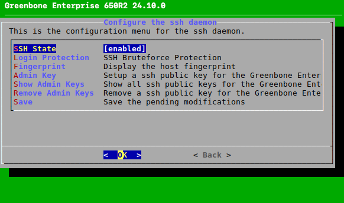
Рис. 6.2 Новая опция меню для сохранения ожидающих изменений.¶
Если выйти из меню без сохранения изменений, выводится предупреждение (см. Рис. 6.3).

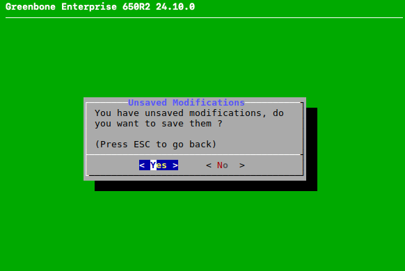
Рис. 6.3 Сохранение ожидающих изменений¶
6.2 Меню настройки¶
6.2.1 Управление пользователями¶
6.2.1.1 Изменение пароля системного администратора¶
Пароль системного администратора можно изменить. Это особенно важно при первой базовой настройке. Настройка по умолчанию не подходит для производственной среды.
Пароль можно изменить следующим образом:
Выбирать Настройка и нажмите Входить.
Выбирать Пользователь и нажмите Входить.
Выбирать Пароль и нажмите Входить (видеть Рис. 6.4).
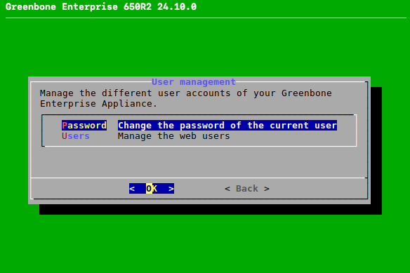
Рис. 6.4 Доступ к управлению пользователями¶
Введите текущий пароль и нажмите Входить (видеть Рис. 6.5).
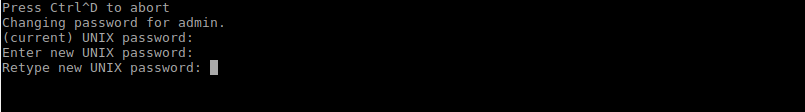
Рис. 6.5 Изменение пароля системного администратора¶
Введите новый пароль и нажмите Входить.
Примечание
Тривиальные пароли отклоняются, включая пароль по умолчанию.
администратор.Повторите новый пароль и нажмите Входить.
Примечание
Изменение вступает в силу немедленно, и фиксация изменения не требуется. Откат тоже невозможен.


6.2.1.2 Управление веб-пользователями¶
Меню администрирования GOS предлагает возможность управления веб-пользователями (= учетными записями пользователей для веб-интерфейса устройства и API GMP).
Примечание
Для моделей приборов АК-ШУМКАР 35 и АК-ШУМКАР 25В веб-интерфейс отсутствует.
Для этих моделей устройств данная глава и ее подразделы неактуальны.
Примечание
Чтобы использовать веб-интерфейс устройства, по крайней мере один веб-администратор (= веб-пользователь с ролью Админ) необходимо создать (см. главу 6.2.1.3).
Веб-администраторы, созданные через меню администрирования ГОС, не имеют владельца и являются так называемыми «глобальными объектами». Иногда их также называют «пользователями глобальной сети». Управлять ими можно только через меню администрирования ГОС или суперадминистратором.
Все веб-пользователи могут быть отображены следующим образом:
Выбирать Настройка и нажмите Входить.
Выбирать Пользователь и нажмите Входить.
Выбирать Пользователи и нажмите Входить.
Выбирать Получение списка пользователей и нажмите Входить для отображения списка всех настроенных веб-пользователей (см. Рис. 6.6).

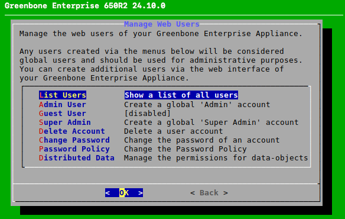
Рис. 6.6 Управление веб-пользователями¶
6.2.1.3 Создание веб-администратора¶
Чтобы использовать веб-интерфейс устройства, по крайней мере один веб-администратор (= веб-пользователь с ролью Админ) необходимо создать.
Примечание
Создание первого веб-администратора возможно только с помощью меню администрирования ГОС.
Веб-администратора можно создать следующим образом:
Выбирать Настройка и нажмите Входить.
Выбирать Пользователь и нажмите Входить.
Выбирать Пользователи и нажмите Входить.
Выбирать Администратор и нажмите Входить.
Введите имя пользователя веб-администратора (см. Рис. 6.7).
Примечание
В имени пользователя разрешены только следующие символы:
Все буквенно-цифровые символы
- (бросаться)
_ (подчеркивание)
. (точка)
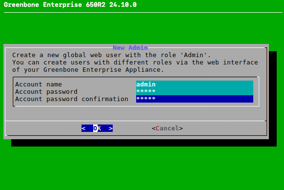
Рис. 6.7 Создание нового веб-администратора¶
Дважды введите пароль веб-администратора.
Примечание
Пароль может содержать символы любого типа и иметь длину не более 64 символов.
При использовании специальных символов помните, что они должны быть доступны на всех используемых клавиатурах и правильно поддерживаться всеми клиентскими программами и операционными системами. Копирование и вставка специальных символов для паролей может привести к недействительным паролям в зависимости от этих внешних факторов.
Выбирать ХОРОШО и нажмите Входить.
→ Сообщение информирует о том, что веб-администратор создан.
Нажимать Входить чтобы закрыть сообщение.

6.2.1.4 Включение гостевого пользователя¶
Чтобы гость мог войти в систему без пароля, гостевой доступ должен быть включен следующим образом:
Выбирать Настройка и нажмите Входить.
Выбирать Пользователь и нажмите Входить.
Выбирать Пользователи и нажмите Входить.
Выбирать Гость пользователь и нажмите Входить.
Введите имя пользователя и пароль существующего веб-пользователя и нажмите Вкладка.
Нажимать Входить.
→ Теперь веб-пользователю разрешен вход в веб-интерфейс без необходимости ввода пароля (см. Рис. 6.8).
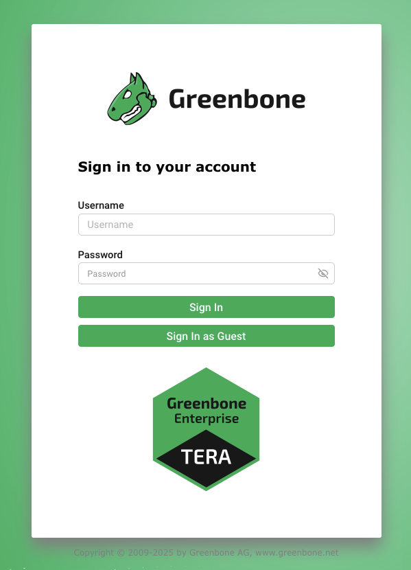
Рис. 6.8 Вход в качестве гостя без пароля¶

6.2.1.5 Создание суперадминистратора¶
Роль Суперадминистратор это высший уровень доступа. Пользователь с этой ролью может быть создан следующим образом:
Выбирать Настройка и нажмите Входить.
Выбирать Пользователь и нажмите Входить.
Выбирать Пользователи и нажмите Входить.
Выбирать Суперадминистратор и нажмите Входить.
→ Предупреждение с просьбой подтвердить процесс (см. Рис. 6.9).
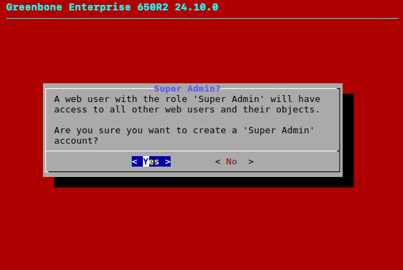
Рис. 6.9 Предупреждение при создании нового суперадминистратора¶
Выбирать Да и нажмите Входить.
Введите имя пользователя суперадминистратора.
Примечание
В имени пользователя разрешены только следующие символы:
Все буквенно-цифровые символы
- (бросаться)
_ (подчеркивание)
. (точка)
Дважды введите пароль суперадминистратора.
Примечание
Пароль может содержать символы любого типа и иметь длину не более 64 символов.
При использовании специальных символов помните, что они должны быть доступны на всех используемых клавиатурах и правильно поддерживаться всеми клиентскими программами и операционными системами. Копирование и вставка специальных символов для паролей может привести к недействительным паролям в зависимости от этих внешних факторов.
Выбирать ХОРОШО и нажмите Входить.
→ Сообщение информирует о том, что суперадминистратор создан.
Нажимать Входить чтобы закрыть сообщение.
Примечание
Суперадминистратора может редактировать только сам суперадминистратор.

6.2.1.6 Удаление учетной записи пользователя¶
Примечание
Суперадминистраторов можно удалить только так, как описано здесь. Удаление суперадминистратора через веб-интерфейс невозможно.
Пользователя, который является владельцем импорта каналов, невозможно удалить. Необходимо указать другого владельца импорта каналов или сначала отключить эту настройку (см. главу 6.2.1.10.1)
Веб-пользователя можно удалить следующим образом:
Выбирать Настройка и нажмите Входить.
Выбирать Пользователь и нажмите Входить.
Выбирать Пользователи и нажмите Входить.
Выбирать Удалить аккаунт и нажмите Входить.
Выберите веб-пользователя, которого следует удалить, и нажмите Входить.
→ Сообщение спрашивает, следует ли выбрать наследника.
Если необходимо определить наследника, выберите Да и нажмите Входить.
Выберите веб-пользователя, который должен быть наследником, и нажмите Входить.
→ Веб-пользователь удаляется немедленно.
или
Если наследник не должен быть определен, выберите Нет и нажмите Входить.
→ Веб-пользователь удаляется немедленно.
6.2.1.7 Ограничение количества одновременных веб-сессий¶
Один и тот же веб-пользователь может войти в веб-интерфейс в нескольких веб-сеансах. Можно ограничить количество одновременных веб-сессий.
Выбирать Настройка и нажмите Входить.
Выбирать Пользователь и нажмите Входить.
Выбирать Пользователи и нажмите Входить.
Выбирать Пользовательские сеансы и нажмите Входить.
Введите максимальное количество одновременных веб-сессий в поле ввода (см. Рис. 6.10).
Примечание
Значение может находиться между
0и25. Значение по умолчанию:0, что означает, что количество веб-сессий не ограничено.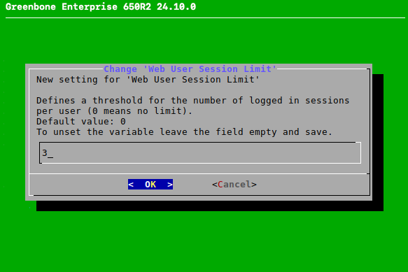
Рис. 6.10 Ограничение количества веб-сессий¶
Нажимать Входить.

6.2.1.8 Изменение пароля пользователя¶
Пароль веб-пользователя можно изменить следующим образом:
Выбирать Настройка и нажмите Входить.
Выбирать Пользователь и нажмите Входить.
Выбирать Пользователи и нажмите Входить.
Выбирать Изменить пароль и нажмите Входить.
Выберите веб-пользователя, пароль которого необходимо изменить, и нажмите Входить.
Дважды введите новый пароль и нажмите Вкладка (видеть Рис. 6.11).
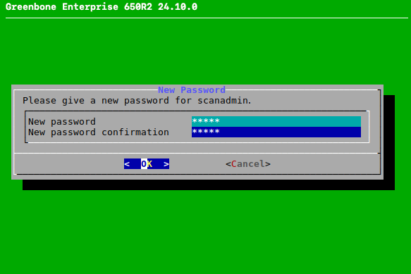
Рис. 6.11 Изменение пароля пользователя¶
Нажимать Входить.

6.2.1.9 Изменение политики паролей¶
Требования к паролям можно изменить следующим образом:
Выбирать Настройка и нажмите Входить.
Выбирать Пользователь и нажмите Входить.
Выбирать Пользователи и нажмите Входить.
Выбирать Политика паролей и нажмите Входить.
Выбирать Длина и нажмите Входить установить минимальную длину пароля.
Примечание
Минимальная длина должна быть не менее 10 символов.
Выбирать Имя пользователя и нажмите Входить чтобы определить, могут ли имя пользователя и пароль совпадать.
Выбирать Сложный и нажмите Входить чтобы определить, должен ли пароль содержать хотя бы одну букву, одну цифру и один символ.
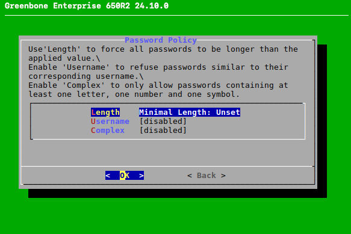
Рис. 6.12 Изменение политики паролей¶

6.2.1.10 Настройка параметров объектов данных¶
Конфигурации сканирования, политики соответствия, форматы отчетов и списки портов «Ак Шумкар» (далее «объекты») распространяются через фид. Эти объекты должны принадлежать пользователю, владельцу импорта фида.
Объекты загружаются и обновляются во время обновления фида, если был установлен владелец импорта фида.
Удалять объекты могут только владелец импорта ленты, суперадминистратор и пользователи, получившие соответствующие права. Если объекты удалены, они будут загружены снова при следующем обновлении фида.
Примечание
Если объекты остаются в корзине, они еще не считаются удаленными и не будут загружены повторно при следующем обновлении ленты.
Если объекты не должны загружаться, необходимо отключить владельца импорта фида.
Владелец импорта ленты, суперадминистратор (роль по умолчанию) и администратор (роль по умолчанию), у которых в данный момент есть разрешения на доступ к объектам, также могут предоставлять дополнительные разрешения для объектов другим пользователям (см. главу). 8.4.1.1 или 8.4.1.2). Обычно это относится только к ролям по умолчанию. Пользовательским ролям сначала необходимо предоставить разрешения вручную.
6.2.1.10.1 Изменение владельца импорта фида¶
Владелец импорта каналов задается во время первой настройки устройства (см. Главы 5 и 4). Однако владельца импорта фида можно изменить позже.
Примечание
Если владелец импорта фида изменен, право собственности на объекты будет изменено на нового владельца импорта фида при следующем импорте из фида. До этого момента предыдущий владелец импорта фида продолжает владеть объектами.
Если предыдущий владелец импорта фида удалит объекты, они будут импортированы во время обновления фида и принадлежать новому владельцу импорта фида.
Владельца импорта фида можно изменить следующим образом:
Выбирать Настройка и нажмите Входить.
Выбирать Пользователь и нажмите Входить.
Выбирать Пользователи и нажмите Входить.
Выбирать Распределенные данные и нажмите Входить (видеть Рис. 6.13).
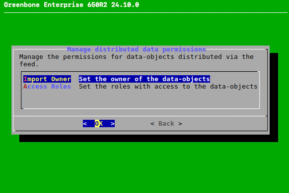
Рис. 6.13 Настройка параметров объектов данных¶
Выбирать Владелец импорта и нажмите Входить.
Выберите пользователя, который должен стать владельцем импорта каналов, и нажмите Космос.
Нажимать Входить.

Примечание
Пользователя, который является владельцем импорта каналов, нельзя удалить (см. главу 6.2.1.6). Другой владелец импорта фида или (Не установлено) необходимо выбрать.
6.2.1.10.2 Настройка ролей доступа¶
По умолчанию роли Пользователь, Админ и Суперадминистратор имеют доступ на чтение к объектам, что означает, что они могут видеть и использовать их в веб-интерфейсе.
Однако роли, которые должны иметь доступ на чтение к объектам, можно выбрать следующим образом:
Выбирать Настройка и нажмите Входить.
Выбирать Пользователь и нажмите Входить.
Выбирать Пользователи и нажмите Входить.
Выбирать Распределенные данные и нажмите Входить.
Выбирать Роли доступа и нажмите Входить.
Выберите роли, которые должны иметь возможность видеть и использовать объекты, и нажмите Космос (видеть Рис. 6.14).
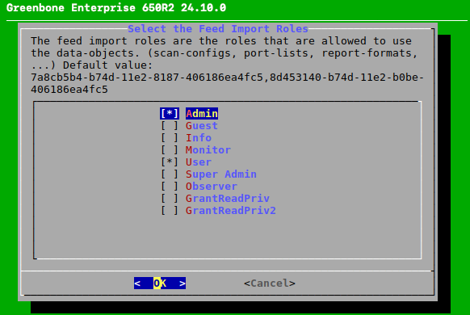
Рис. 6.14 Выбор ролей с доступом на чтение к объектам¶
Нажимать Входить.

6.2.2 Настройка параметров сети¶
6.2.2.1 Общая информация о пространствах имен¶
Некоторые модели устройств (АК-ШУМКАР 5400/6500 и АК-ШУМКАР 400/450/600/650) имеют сетевые интерфейсы, организованные в разных пространствах имен:
Пространство имен управления
Это пространство имен включает в себя все интерфейсы, необходимые для управления.
Только интерфейсы в пространстве имен управления могут обрабатывать трафик управления. Сюда входит доступ к меню администрирования ГСН, веб-интерфейсу, серверу каналов «Ак Шумкар», а также настройка и управление установками главного датчика.
Сканировать пространство имен
Это пространство имен включает в себя все интерфейсы, необходимые для сканирования уязвимостей.
Интерфейсы в пространстве имен сканирования обрабатывают только трафик сканирования.
По умолчанию все интерфейсы находятся в пространстве имен управления. Это позволяет как управлять, так и сканировать трафик на всех интерфейсах. Как только хотя бы один интерфейс оказывается в пространстве имен сканирования, разделение пространства имен вступает в силу.
Пространства имен разделены, чтобы подключать только интерфейсы в пространстве имен сканирования к сетям, доступным из Интернета. Таким образом, атаки из Интернета не могут достичь интерфейсов управления устройства.
Кончик
Рекомендуется разделить пространства имен.
6.2.2.2 Переключение интерфейса в другое пространство имен¶
Интерфейсы можно переместить в другое пространство имен следующим образом:
Выбирать Настройка и нажмите Входить.
Выбирать Сеть и нажмите Входить.
Выбирать Настройка пространств имен и нажмите Входить.
Нажимать Входить.
Примечание
Интерфейсы, которые в данный момент находятся в пространстве имен сканирования, отмечены значком * (видеть Рис. 6.15).
Интерфейсы, которые в данный момент находятся в пространстве имен управления, помечены соответствующим образом.
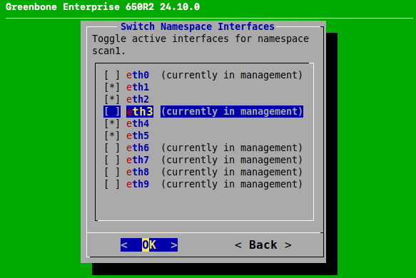
Рис. 6.15 Переключение интерфейсов в другое пространство имен¶
Выберите интерфейс, который следует переместить, и нажмите Космос.
Примечание
Не все интерфейсы можно переместить в пространство имен сканирования, иначе устройство станет недоступно.
Нажимать Входить.

6.2.2.3 Настройка сетевых интерфейсов¶
Примечание
По крайней мере, один сетевой интерфейс должен быть настроен для доступа к устройству через сеть. Обычно первый сетевой интерфейс eth0 используется для этой цели. Администратор должен настроить этот сетевой интерфейс и подключить устройство к сети.
На всех виртуальных устройствах первый сетевой интерфейс предварительно настроен на IPv4 через DHCP.
Сетевые интерфейсы можно настроить следующим образом:
Выбирать Настройка и нажмите Входить.
Выбирать Сеть и нажмите Входить.
Выберите пространство имен нужного интерфейса и нажмите Входить.
Выбирать Интерфейсы и нажмите Входить.
Выберите нужный интерфейс и нажмите Входить.
Примечание
Если в этом пространстве имен есть только один интерфейс, конфигурация интерфейса открывается напрямую.
→ Интерфейс можно настроить (см. Рис. 6.16).
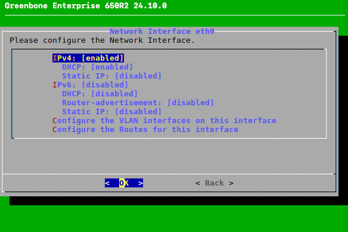
Рис. 6.16 Настройка сетевого интерфейса¶

6.2.2.3.1 Настройка статического IP-адреса¶
Выберите желаемый интерфейс (см. главу 6.2.2.3).
Выбирать Статический IP (для IPv4 или IPv6) и нажмите Входить.
Удалить
DHCPиз поля ввода и замените его правильным IP-адресом, включая длину префикса (см. Рис. 6.17).Примечание
Статический IP-адрес можно отключить, оставив поле ввода пустым.
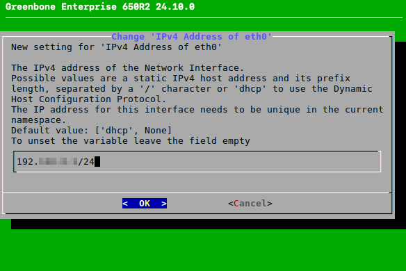
Рис. 6.17 Ввод статического IP-адреса¶
Нажимать Входить.
→ Сообщение информирует о том, что изменения необходимо сохранить.
Нажимать Входить чтобы закрыть сообщение.

6.2.2.3.2 Настройка сетевого интерфейса для использования DHCP¶
Примечание
При использовании DHCP устройство передает не MAC-адрес, а уникальный идентификатор DHCP (DUID). Хотя это не должно создавать проблем для современных DHCP-серверов, некоторые старые DHCP-серверы (например, Windows Server 2012) могут не справиться с этой задачей.
Одним из возможных решений является указание DUID вместо MAC-адреса на DHCP-сервере. Альтернативно на устройстве можно использовать статический IP-адрес.
Сетевой интерфейс можно настроить на использование DHCP следующим образом:
Выберите желаемый интерфейс (см. главу 6.2.2.3).
Выбирать DHCP (для IPv4 или IPv6) и нажмите Входить.
6.2.2.3.3 Настройка максимальной единицы передачи (MTU)¶
Примечание
Настройка MTU возможна только в том случае, если настроен статический IP-адрес.
MTU можно установить следующим образом:
Выберите желаемый интерфейс (см. главу 6.2.2.3).
Выбирать МТУ (для IPv4 или IPv6) и нажмите Входить.
Введите MTU в поле ввода.
Примечание
Если поле ввода оставить пустым, будет установлено значение по умолчанию.
Нажимать Входить.
→ Сообщение информирует о том, что изменения необходимо сохранить.
Нажимать Входить чтобы закрыть сообщение.
6.2.2.3.4 Использование объявления маршрутизатора для IPv6¶
Если настройка IP-адресов и глобального шлюза для IPv6 должна выполняться автоматически через SLAAC (автоконфигурация адресов без сохранения состояния), объявление маршрутизатора можно включить следующим образом:
Выберите желаемый интерфейс (см. главу 6.2.2.3).
Выбирать Роутер-реклама и нажмите Входить.
6.2.2.3.5 Настройка VLAN¶
Примечание
Интерфейсы VLAN в настоящее время не поддерживаются виртуальными устройствами. Если гипервизор поддерживает виртуальные коммутаторы, их можно использовать для реализации этой функциональности.
Создание новой VLAN
Новый субинтерфейс VLAN можно создать следующим образом:
Выберите желаемый интерфейс (см. главу 6.2.2.3).
Выбирать Настройте интерфейсы VLAN на этом интерфейсе. и нажмите Входить.
Выбирать Настройте новый интерфейс VLAN и нажмите Входить.
Введите идентификатор VLAN в поле ввода и нажмите Входить (видеть Рис. 6.18).
→ Сообщение информирует о том, что изменения необходимо сохранить.
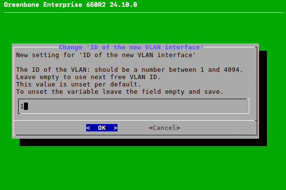
Рис. 6.18 Создание нового субинтерфейса VLAN¶
Нажимать Входить чтобы закрыть сообщение.
→ Новый интерфейс можно настроить с использованием IPv4 и IPv6 (см. Рис. 6.19).
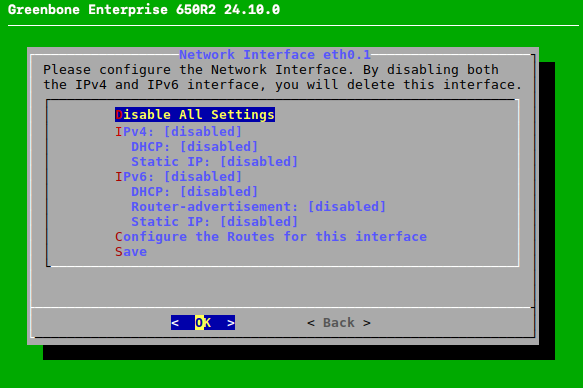
Рис. 6.19 Настройка субинтерфейса VLAN¶


Настройка VLAN
Все созданные субинтерфейсы можно настроить следующим образом:
Выберите желаемый интерфейс (см. главу 6.2.2.3).
Выбирать Настройте интерфейсы VLAN на этом интерфейсе. и нажмите Входить.
Выбирать Настройте интерфейс VLAN… для желаемого субинтерфейса.
Настройте субинтерфейс, как описано в подразделах главы. 6.2.2.3.
Примечание
VLAN можно удалить, выбрав Отключить все настройки и нажатие Входить.
6.2.2.3.6 Настройка маршрутов для интерфейса¶
Добавление нового маршрута
Новый маршрут для интерфейса можно настроить следующим образом:
Выберите желаемый интерфейс (см. главу 6.2.2.3).
Выбирать Настройте маршруты для этого интерфейса и нажмите Входить.
Выбирать Настройка маршрутов IPv4 или Настройка маршрутов IPv6 и нажмите Входить (видеть Рис. 6.20).
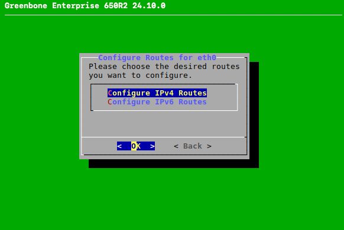
Рис. 6.20 Настройка маршрутов для интерфейса¶
Выбирать Добавить новый маршрут и нажмите Входить.
Введите целевую сеть и следующий переход в поля ввода, выберите ХОРОШО и нажмите Входить.

Настройка маршрута
Все созданные маршруты можно настроить следующим образом:
Выберите желаемый интерфейс (см. главу 6.2.2.3).
Выбирать Настройте маршруты для этого интерфейса и нажмите Входить.
Выбирать Настройка маршрутов IPv4 или Настройка маршрутов IPv6 и нажмите Входить.
Выберите нужный маршрут и нажмите Входить.
Отредактируйте маршрут, выберите ХОРОШО и нажмите Входить.
6.2.2.4 Настройка DNS-сервера¶
Для получения канала и обновлений устройству требуется доступный и работающий DNS-сервер (система доменных имен) для разрешения имен. Этот параметр не требуется, если устройство использует прокси-сервер для загрузки канала и обновлений.
Если для настройки сетевых интерфейсов используется DHCP, используются DNS-серверы, предоставляемые протоколом DHCP.
Устройство поддерживает до трех DNS-серверов. Требуется хотя бы один DNS-сервер. Дополнительные серверы будут использоваться только в случае сбоя первого сервера.
DNS-сервер можно настроить следующим образом:
Выбирать Настройка и нажмите Входить.
Выбирать Сеть и нажмите Входить.
Выбирать Пространство имен: Управление и нажмите Входить.
Выбирать DNS и нажмите Входить.
Выберите нужный DNS-сервер и нажмите Входить.
Введите IP-адрес, используемый в качестве DNS-сервера, в поле ввода и нажмите Входить (видеть Рис. 6.21).
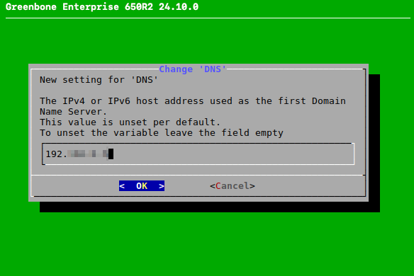
Рис. 6.21 Настройка DNS-сервера¶
→ Сообщение информирует о том, что изменения необходимо сохранить.
Нажимать Входить чтобы закрыть сообщение.

Примечание
Доступен ли DNS-сервер и работоспособен ли он, можно определить, выполнив самопроверку (см. главу 6.3.1).
6.2.2.5 Настройка глобального шлюза¶
Глобальный шлюз часто называют шлюзом по умолчанию.
Его можно получить автоматически через DHCP или объявление маршрутизатора.
Если для назначения IP-адресов используется DHCP, глобальный шлюз будет установлен через DHCP, если он не был задан явно.
Если SLAAC (автоконфигурация адресов без сохранения состояния) следует использовать с IPv6, необходимо активировать объявление маршрутизатора (см. главу 6.2.2.3.4).
Однако если устройство настроено на использование исключительно статических IP-адресов и требуется доступ к другим сетям, шлюз необходимо настроить вручную. Отдельные параметры доступны для IPv4 и IPv6.
Глобальный шлюз можно настроить следующим образом:
Выбирать Настройка и нажмите Входить.
Выбирать Сеть и нажмите Входить.
Примечание
Если устройство имеет пространства имен (см. главу 6.2.2.1), сначала необходимо выбрать желаемое пространство имен.
Если у устройства нет пространств имен, перейдите к шагу 4.
Выберите пространство имен, для которого должен быть настроен глобальный шлюз, и нажмите Входить.
Выбирать Глобальный шлюз для IPv4 или Глобальный шлюз (IPv6) для IPv6 и нажмите Входить.
Выберите нужный интерфейс и нажмите Входить (видеть Рис. 6.22).
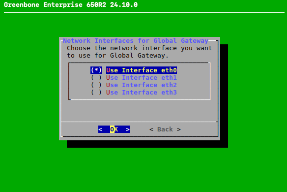
Рис. 6.22 Настройка глобального шлюза¶
Введите IP-адрес, используемый в качестве глобального шлюза, в поле ввода и нажмите Входить.
→ Сообщение информирует о том, что изменения необходимо сохранить.
Нажимать Входить чтобы закрыть сообщение.

6.2.2.6 Установка имени хоста и имени домена¶
При доставке устройства компанией «Ак Шумкар» или после сброса настроек к заводским настройкам настраиваются хост и имя домена по умолчанию. Настройка правильного полного доменного имени (FQDN) может потребоваться в зависимости от настройки, в которой развертывается устройство, и обычно рекомендуется.
Параметр имени хоста используется для настройки короткого имени хоста, а параметр имени домена используется для имени домена, включая его суффикс. Эти два значения вместе образуют полное доменное имя. Значения по умолчанию:
Имя хоста: Геа
Доменное имя: gbuser.net
Текущее настроенное доменное имя всегда используется в качестве домена поиска. DHCP-серверы могут добавлять домены поиска, если DHCP настроен хотя бы для одного сетевого интерфейса устройства и DHCP-сервер настроен соответствующим образом. GOS не предоставляет никаких дополнительных параметров конфигурации для добавления дополнительных доменов пользовательского поиска.
Имя хоста и имя домена можно настроить следующим образом:
Выбирать Настройка и нажмите Входить.
Выбирать Сеть и нажмите Входить.
Выбирать Пространство имен: Управление и нажмите Входить.
Выбирать Имя хоста или Доменное имя и нажмите Входить.
Введите имя хоста или имя домена в поле ввода и нажмите Входить (видеть Рис. 6.23).
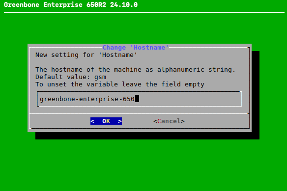
Рис. 6.23 Установка имени хоста/доменного имени¶
→ Сообщение информирует о том, что изменения необходимо сохранить.
Нажимать Входить чтобы закрыть сообщение.

6.2.2.7 Ограничение доступа к управлению¶
Можно установить IP-адрес, под которым доступен интерфейс управления.
Весь административный доступ (SSH, HTTPS, GMP) будет ограничен соответствующим интерфейсом и не будет доступен на других интерфейсах.
Примечание
Эта функция частично совпадает с разделением пространства имен (см. главу 6.2.2). Рекомендуется разделение пространства имен.
Если IP-адрес не задан, интерфейс управления будет доступен на всех IP-адресах интерфейсов в пространстве имен управления.
IP-адрес для интерфейса управления можно установить следующим образом:
Выбирать Настройка и нажмите Входить.
Выбирать Сеть и нажмите Входить.
Выбирать Пространство имен: Управление и нажмите Входить.
Выбирать IP-адрес управления (v4) или IP-адрес управления (v6) и нажмите Входить.
Введите IP-адрес интерфейса управления в поле ввода и нажмите Входить (видеть Рис. 6.24).
Примечание
IP-адрес должен быть IP-адресом одного из интерфейсов в пространстве имен управления. Если установлен любой другой IP-адрес, интерфейс управления будет недоступен.
Либо IP-адрес, либо имя интерфейса (например,
eth0) можно ввести.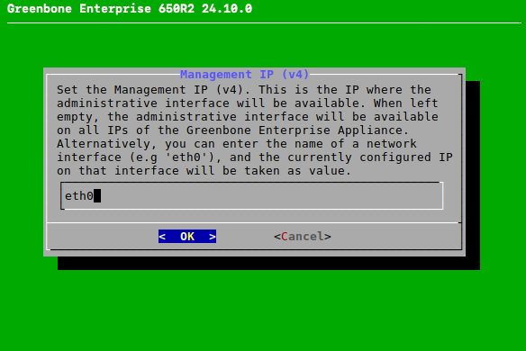
Рис. 6.24 Ограничение доступа к управлению¶

6.2.2.8 Отображение MAC- и IP-адресов, а также сетевых маршрутов¶
Используемые MAC-адреса, настроенные в данный момент IP-адреса и сетевые маршруты устройства могут отображаться в простом обзоре.
Примечание
Это не поддерживает настройку MAC-адресов.
MAC-адреса, IP-адреса или сетевые маршруты могут отображаться следующим образом:
Выбирать Настройка и нажмите Входить.
Выбирать Сеть и нажмите Входить.
Выберите пространство имен, для которого должны отображаться IP-адреса, MAC-адреса или сетевые маршруты, и нажмите Входить.
Выбирать MAC, ИП или Маршруты и нажмите Входить.
→ Отображаются MAC/IP-адреса или сетевые маршруты выбранного пространства имен (см. Рис. 6.25).
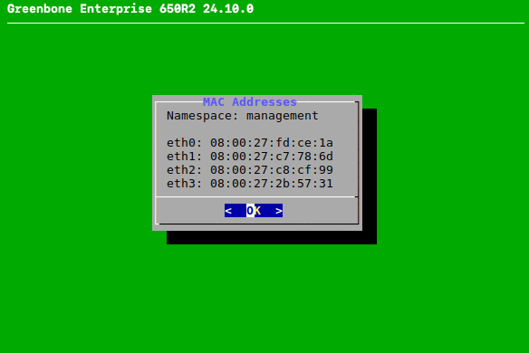
Рис. 6.25 Отображение MAC/IP-адресов или сетевых маршрутов¶

6.2.3 Настройка подключения к виртуальной частной сети (VPN)¶
OpenVPN интегрирован в ГОС. Функция VPN позволяет сканировать цели, доступные через VPN-туннель, но не влияет на другие цели, настройки сети или соединения главного датчика.
Примечание
Сканирование через VPN-туннель доступно только для моделей устройств АК-ШУМКАР DECA/TERA/PETA/EXA (см. гл. 3).
Для запуска сканирования через VPN-туннель необходимо настроить VPN-соединение. VPN-туннель всегда инициируется со стороны устройства.
Для аутентификации устройства в VPN необходим файл PKCS#12 со следующими требованиями:
Файл PKCS#12 должен содержать необходимый сертификат и файлы закрытого ключа.
Файл PKCS#12 может содержать файл центра сертификации (CA). Если он его не содержит, файл CA необходимо импортировать отдельно.
Файл PKCS#12 может быть защищен паролем или нет.
Защищенные паролем файлы секретных ключей в файле PKCS#12 не поддерживаются.
6.2.3.1 Настройка VPN-соединения¶
Примечание
Одновременно можно настроить только одно VPN-соединение.
Новое VPN-соединение можно настроить следующим образом:
Выбирать Настройка и нажмите Входить.
Выбирать VPN и нажмите Входить.
Выбирать Добавить новый VPN и нажмите Входить (видеть Рис. 6.26).
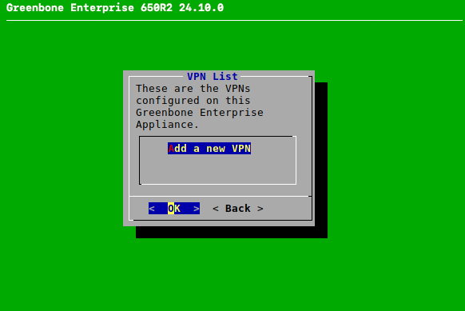
Рис. 6.26 Добавление VPN-соединения¶
Введите IP-адрес VPN в поле ввода и нажмите Входить.
Откройте веб-браузер и введите отображаемый URL-адрес.
Нажмите Просматривать…, выберите контейнер PKCS#12 и нажмите Загрузить.
Если для защиты контейнера PKCS#12 использовался пароль экспорта, введите пароль и нажмите Входить.
→ Сообщение информирует об успешном извлечении файла PKCS#12.
Нажимать Входить.
Примечание
Если файл PKCS#12 не содержит файла CA, файл CA необходимо импортировать отдельно.
Если файл PKCS#12 уже содержит файл CA, файл CA также можно импортировать отдельно, но при этом файл CA из файла PKCS#12 будет перезаписан.
Выбирать Центр сертификации и нажмите Входить.
Откройте веб-браузер и введите отображаемый URL-адрес.
Нажмите Просматривать…, выберите файл CA и нажмите Загрузить.
→ Сообщение информирует, что файл CA был успешно импортирован.
Нажимать Входить.
→ VPN-соединение установлено, и цели, доступные через VPN, можно сканировать (см. главу 9.2).

6.2.3.2 Редактирование или удаление VPN-соединения¶
VPN-соединение можно редактировать следующим образом:
Выбирать Настройка и нажмите Входить.
Выбирать VPN и нажмите Входить.
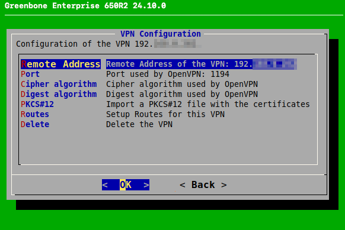
Рис. 6.27 Редактирование или удаление VPN-соединения¶

Доступны следующие действия:
- Удаленный адрес
Определите IP-адрес VPN.
- Порт
Определите порт, используемый OpenVPN. По умолчанию порт 1194.
- Алгоритм шифрования
Выберите алгоритм шифрования. По умолчанию используются настройки OpenVPN по умолчанию.
- Алгоритм дайджеста
Выберите алгоритм дайджеста. По умолчанию используются настройки OpenVPN по умолчанию.
- ПККС#12
Замените файл PKCS#12.
- Маршруты
Добавьте маршрут для VPN-соединения. Должен быть определен целевой IP-адрес, сетевая маска и целевой шлюз.
Примечание
Для VPN-соединения можно настроить только один маршрут.
- Удалить
Удалите VPN-соединение.
6.2.4 Настройка служб¶
Для удаленного доступа к устройству доступно множество интерфейсов:
HTTPS, см. главу 6.2.4.1
Протокол управления «Ак Шумкар» (GMP), см. главу 14
Открытый протокол сканирования (OSP), см. главу 6.2.4.3
SSH, см. главу 6.2.4.4
SNMP, см. главу 6.2.4.5
6.2.4.1 Настройка HTTPS¶
Веб-интерфейс — это обычный вариант для создания, запуска и анализа сканирования уязвимостей. Он включен по умолчанию и не может быть отключен.
Для безопасного использования веб-интерфейса рекомендуется использовать сертификат HTTPS.
Веб-интерфейс безопасно настроен с использованием заводских настроек, предоставленных «Ак Шумкар», но безопасность можно дополнительно повысить с помощью параметров конфигурации, описанных в этой главе.
6.2.4.1.1 Настройка таймаута веб-интерфейса¶
Если в течение определенного периода времени в веб-интерфейсе не выполняется никаких действий, пользователь автоматически выходит из системы. Значение тайм-аута можно установить следующим образом:
Выбирать Настройка и нажмите Входить.
Выбирать Услуги и нажмите Входить.
Выбирать HTTPS и нажмите Входить.
Выбирать Тайм-аут и нажмите Входить.
Введите желаемое значение тайм-аута в поле ввода и нажмите Входить (видеть Рис. 6.28).
Примечание
Значение может находиться в диапазоне от 1 до 1440 минут (1 день). Значение по умолчанию — 15 минут.
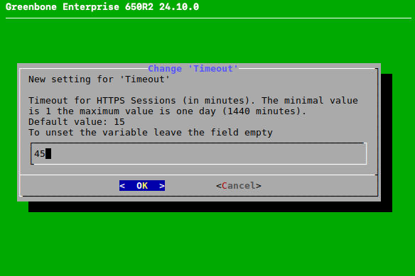
Рис. 6.28 Установка значения таймаута¶
→ Сообщение информирует о том, что изменения необходимо сохранить.
Нажимать Входить чтобы закрыть сообщение.

6.2.4.1.2 Настройка протоколов TLS¶
Протоколы TLS для HTTPS-соединения веб-интерфейса можно настроить следующим образом:
Выбирать Настройка и нажмите Входить.
Выбирать Услуги и нажмите Входить.
Выбирать HTTPS и нажмите Входить.
Выбирать Протоколы и нажмите Входить.
Выберите нужную версию протокола и нажмите Космос (видеть Рис. 6.29).
Примечание
По умолчанию выбраны обе версии.
Если TLSv1.2 выбран (отдельно или в сочетании с версией 1.3), можно настроить шифры для HTTPS-соединения (см. главу 6.2.4.1.3).
Если бы только TLSv1.3 выбрано значение по умолчанию для
- наборы шифров вализ OpenSSL для наборов шифров. В этом случае пункт меню настройки шифров недоступен.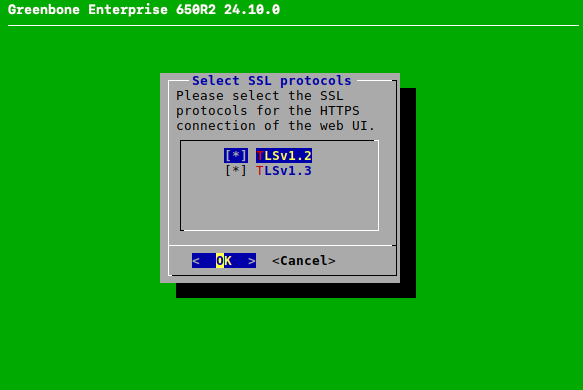
Рис. 6.29 Настройка протоколов TLS для соединения HTTPS¶
Выбирать ХОРОШО и нажмите Входить.

6.2.4.1.3 Настройка шифров¶
Если для HTTPS-соединения веб-интерфейса используется TLS версии 1.2 (отдельно или в сочетании с версией 1.3, см. гл. 6.2.4.1.2), шифры HTTPS можно настроить для дальнейшего повышения безопасности веб-интерфейса.
Примечание
Текущая настройка разрешает только безопасные шифры с использованием ключа длиной не менее 128 бит, явно запрещая наборы шифров, используемые SSLv3 и TLSv1.0.
Для TLSv1.1 шифров не существует.
Шифры HTTPS можно настроить следующим образом:
Выбирать Настройка и нажмите Входить.
Выбирать Услуги и нажмите Входить.
Выбирать HTTPS и нажмите Входить.
Выбирать Шифры и нажмите Входить.
Введите желаемое значение в поле ввода и нажмите Входить (видеть Рис. 6.30).
Примечание
Строка, используемая для определения шифров, проверяется OpenSSL и должна соответствовать синтаксису списка шифров OpenSSL.
Более подробную информацию о синтаксисе можно найти здесь.
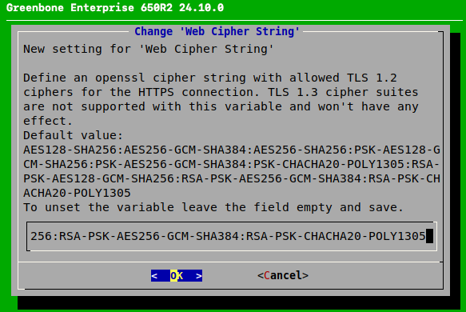
Рис. 6.30 Настройка шифров¶
→ Сообщение информирует о том, что изменения необходимо сохранить.
Нажимать Входить чтобы закрыть сообщение.

6.2.4.1.4 Настройка параметров Диффи-Хеллмана (DH)¶
Параметры DH используются веб-сервером для установления соединений TLS. Для дальнейшего повышения безопасности веб-интерфейса новые параметры DH можно сгенерировать следующим образом:
Выбирать Настройка и нажмите Входить.
Выбирать Услуги и нажмите Входить.
Выбирать HTTPS и нажмите Входить.
Выбирать Параметры ЦТ и нажмите Входить.
Выберите нужный размер ключа и нажмите Космос.
Нажимать Входить.
→ Сообщение информирует о том, что генерация была запущена в фоновом режиме.
Кончик
Текущую работу системы можно отобразить, выбрав О и нажатие Входить в меню администрирования ГСН.
6.2.4.1.5 Настройка HTTP STS¶
Для дальнейшего повышения безопасности веб-интерфейса можно включить HTTP Strict Transport Security (HSTS). Для работы HSTS требуется сертификат HTTPS, подписанный центром сертификации (CA) (см. главу 6.2.4.1.7.2).
Включение HSTS
HSTS можно включить следующим образом:
Выбирать Настройка и нажмите Входить.
Выбирать Услуги и нажмите Входить.
Выбирать HTTPS и нажмите Входить.
Выбирать HTTP STS и нажмите Входить чтобы включить или отключить HSTS.
Установка максимально допустимого возраста заголовка HSTS
Если HTTP STS включен, максимально допустимый возраст заголовка HSTS можно установить следующим образом:
Выбирать Настройка и нажмите Входить.
Выбирать Услуги и нажмите Входить.
Выбирать HTTPS и нажмите Входить.
Выбирать Максимальный возраст HTTP STS и нажмите Входить.
Введите максимальный возраст в секундах в поле ввода и нажмите Входить (видеть Рис. 6.31).
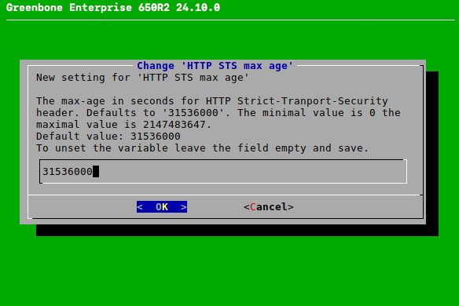
Рис. 6.31 Установка максимально допустимого возраста для заголовка HTTP STS¶
→ Сообщение информирует о том, что изменения необходимо сохранить.
Нажимать Входить чтобы закрыть сообщение.

6.2.4.1.6 Настройка сшивания OCSP¶
Сшивание OCSP (протокол статуса онлайн-сертификата) используется для проверки статуса действительности цифровых сертификатов X.509. Это позволяет сертифицированной стороне выполнить проверку сертификата путем добавления ответа OCSP с отметкой времени, подписанного центром сертификации (CA), к исходному подтверждению связи TLS («сшивание»).
Сшивание OCSP можно включить следующим образом:
Выбирать Настройка и нажмите Входить.
Выбирать Услуги и нажмите Входить.
Выбирать HTTPS и нажмите Входить.
Выбирать Сшивание OCSP и нажмите Входить чтобы включить или отключить сшивание OCSP.
6.2.4.1.7 Управление сертификатами¶
В основном устройство использует два типа сертификатов:
Самоподписанные сертификаты
Сертификаты, выданные внешним центром сертификации (CA).
Все современные операционные системы поддерживают создание и управление собственным центром сертификации.
В Microsoft Windows Server службы сертификации Active Directory помогают администратору создать корневой центр сертификации.
Для систем Linux доступны различные варианты. Один из вариантов описан в IPSec-Howto.
Примечание
Перед созданием сертификата необходимо проверить, как осуществляется доступ к системам.
IP-адрес или DNS-имя сохраняются при создании сертификата.
Отображение текущего сертификата
Текущий сертификат может отображаться следующим образом:
Выбирать Настройка и нажмите Входить.
Выбирать Услуги и нажмите Входить.
Выбирать HTTPS и нажмите Входить.
Выбирать Сертификат и нажмите Входить.
Выбирать Показывать и нажмите Входить.
→ Отображается сертификат.
6.2.4.1.7.1 Самоподписанные сертификаты¶
Использование самозаверяющих сертификатов — самый простой способ. Однако он представляет собой наименьшую безопасность и требует больше работы для пользователя:
Надежность самозаверяющего сертификата может быть проверена пользователем только вручную путем импорта сертификата и проверки его отпечатка.
Самоподписанные сертификаты не могут быть отозваны. Как только они принимаются пользователем, они навсегда сохраняются в браузере. Если злоумышленник получит доступ к соответствующему закрытому ключу, может быть запущена атака «человек посередине» на соединение, защищенное сертификатом.
Для обеспечения быстрой настройки устройство поддерживает самозаверяющие сертификаты.
Для большинства моделей устройств такой сертификат не установлен по умолчанию и его необходимо создать.
Только АК-ШУМКАР ONE уже поставляется с предустановленным сертификатом.
Создание самозаверяющего сертификата
Самозаверяющие сертификаты можно создать следующим образом:
Выбирать Настройка и нажмите Входить.
Выбирать Услуги и нажмите Входить.
Выбирать HTTPS и нажмите Входить.
Выбирать Сертификат и нажмите Входить.
Выбирать Генерировать и нажмите Входить.
→ Сообщение информирует о том, что текущий сертификат и закрытый ключ будут перезаписаны.
Подтвердите сообщение, выбрав Да и нажатие Входить.
Укажите настройки сертификата (см. Рис. 6.32), выбирать ХОРОШО и нажмите Входить.
Примечание
Допустимо создание сертификата без общего имени. Однако сертификат не следует создавать без (а) альтернативного имени субъекта (SAN).
Если используется общее имя, оно должно совпадать с именем одной из сетей SAN.
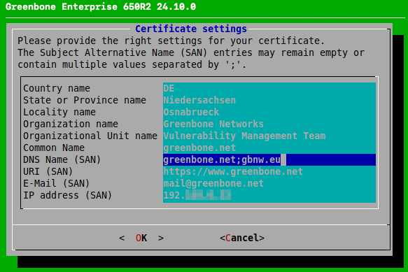
Рис. 6.32 Предоставление настроек сертификата¶
→ По завершении процесса появится сообщение о том, что сертификат можно загрузить.
Нажимать Входить чтобы закрыть сообщение.
Выбирать Скачать и нажмите Входить.
Откройте веб-браузер и введите отображаемый URL-адрес.
Загрузите PEM-файл.
В меню администрирования ГСН нажмите Входить.
→ Когда устройство получает сертификат, в меню администрирования GOS отображается отпечаток сертификата для проверки.
Проверьте отпечаток пальца и подтвердите сертификат, нажав Входить.

6.2.4.1.7.2 Сертификат внешнего центра сертификации (CA)¶
Использование сертификата, выданного центром сертификации, имеет ряд преимуществ:
Все клиенты, доверяющие ЦС, могут напрямую проверить сертификат и установить безопасное соединение. В браузере никаких предупреждений не отображается.
Сертификат может быть легко отозван центром сертификации. Если у клиентов есть возможность проверить статус сертификата, они могут отклонить сертификат, срок действия которого еще не истек, но был отозван. В качестве механизмов могут использоваться списки отзыва сертификатов (CRL) или протокол онлайн-статуса сертификатов (OCSP).
Особенно если несколько систем внутри организации обслуживают информацию, защищенную SSL/TLS, использование центра сертификации организации значительно упрощает управление. Все клиенты просто должны доверять ЦС организации, чтобы принимать все сертификаты, выданные ЦС.
Чтобы импортировать сертификат внешнего центра сертификации, доступны два варианта:
Создайте запрос на подпись сертификата (CSR) на устройстве, подпишите его через внешний центр сертификации и импортируйте сертификат.
Создайте CSR и сертификат извне и импортируйте их с помощью файла PKCS#12.
Создание CSR и импорт сертификата
Примечание
Веб-интерфейс устройства нельзя использовать, пока центр сертификации обработает CSR. Только после импорта подписанного сертификата веб-интерфейс снова доступен.
Можно создать новый CSR и импортировать сертификат следующим образом:
Выбирать Настройка и нажмите Входить.
Выбирать Услуги и нажмите Входить.
Выбирать HTTPS и нажмите Входить.
Выбирать Сертификат и нажмите Входить.
Выбирать КСО и нажмите Входить.
→ Сообщение информирует о том, что текущий сертификат и закрытый ключ будут перезаписаны.
Подтвердите сообщение, выбрав Да и нажатие Входить.
Укажите настройки сертификата (см. Рис. 6.33), выбирать ХОРОШО и нажмите Входить.
Примечание
Допустимо создание сертификата без общего имени. Сертификат не должен создаваться без (а) альтернативного имени(а) субъекта.
Если используется общее имя, оно должно совпадать с именем одной из сетей SAN.
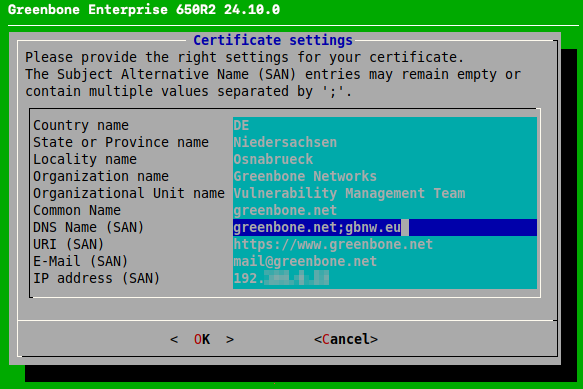
Рис. 6.33 Предоставление настроек сертификата¶
Откройте веб-браузер и введите отображаемый URL-адрес.
Загрузите PEM-файл.
→ В меню администрирования GOS отображается сообщение для проверки того, что CSR не был изменен.
Проверьте информацию, нажав Входить.
Когда сертификат был подписан центром сертификации, выберите Сертификат и нажмите Входить.
Откройте веб-браузер и введите отображаемый URL-адрес.
Нажмите Просматривать…, выберите подписанный сертификат и нажмите Загрузить.
→ Когда устройство получает сертификат, в меню администрирования GOS отображается отпечаток сертификата для проверки.
Проверьте отпечаток пальца и подтвердите сертификат, нажав Входить.

Импорт уже существующего сертификата
Если закрытый ключ и подписанный сертификат уже существуют, их можно импортировать. Закрытый ключ и сертификат должны быть отформатированы как файл PKCS#12. Файл можно защитить паролем экспорта.
Файл PKCS#12 можно импортировать следующим образом:
Выбирать Настройка и нажмите Входить.
Выбирать Услуги и нажмите Входить.
Выбирать HTTPS и нажмите Входить.
Выбирать Сертификат и нажмите Входить.
Выбирать ПККС#12 и нажмите Входить.
→ Сообщение информирует о том, что текущий сертификат и закрытый ключ будут перезаписаны.
Подтвердите сообщение, выбрав Да и нажатие Входить.
Откройте веб-браузер и введите отображаемый URL-адрес.
Нажмите Просматривать…, выберите контейнер PKCS#12 и нажмите Загрузить.
Примечание
Если для защиты контейнера PKCS#12 используется пароль экспорта, его необходимо ввести.
→ Когда устройство получает сертификат, в меню администрирования GOS отображается отпечаток сертификата для проверки.
Проверьте отпечаток пальца и подтвердите сертификат, нажав Входить.
6.2.4.1.8 Отображение отпечатков пальцев¶
Отпечатки использованного сертификата можно отобразить и проверить следующим образом:
Выбирать Настройка и нажмите Входить.
Выбирать Услуги и нажмите Входить.
Выбирать HTTPS и нажмите Входить.
Выбирать Отпечатки пальцев и нажмите Входить.
→ Отображаются следующие отпечатки текущего активного сертификата:
SHA1
SHA256
ББ
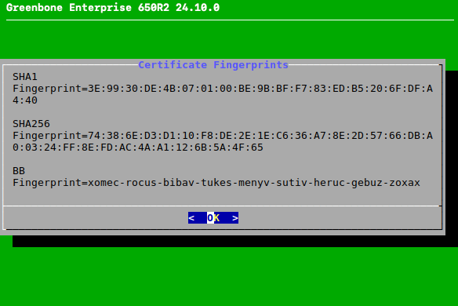
Рис. 6.34 Отображение отпечатков пальцев¶

6.2.4.2 Настройка протокола управления «Ак Шумкар» (GMP)¶
Протокол управления «Ак Шумкар» (GMP) можно использовать для связи собственного программного обеспечения с устройством.
GMP можно активировать с помощью меню администрирования ГОС следующим образом:
Примечание
Прежде чем можно будет включить GMP, необходимо включить службу SSH (см. главу 6.2.4.4).
Выбирать Настройка и нажмите Входить.
Выбирать Услуги и нажмите Входить.
Выбирать GMP и нажмите Входить.
Нажимать Входить чтобы включить или отключить GMP (см. Рис. 6.35).
→ Сообщение информирует о том, что изменения необходимо сохранить.
Нажимать Входить чтобы закрыть сообщение.

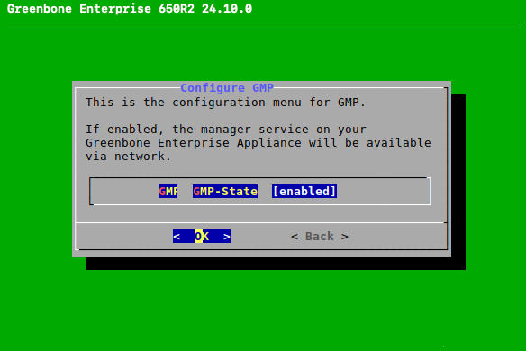
Рис. 6.35 Включение GMP¶
6.2.4.3 Настройка протокола открытого сканера (OSP)¶
Для связи между главным датчиком необходим протокол открытого сканера (OSP) (см. главу 15).
OSP можно активировать с помощью меню администрирования GOS следующим образом:
Примечание
Прежде чем можно будет включить OSP, необходимо включить службу SSH (см. главу 6.2.4.4).
Выбирать Настройка и нажмите Входить.
Выбирать Услуги и нажмите Входить.
Выбирать ОСП и нажмите Входить.
Нажимать Входить чтобы включить или отключить OSP.
→ Сообщение информирует о том, что изменения необходимо сохранить.
Нажимать Входить чтобы закрыть сообщение.
6.2.4.4 Настройка SSH¶
SSH обеспечивает безопасный и удаленный доступ к меню администрирования GOS устройства и командной строке через незащищенную сеть. Кроме того, он необходим для связи между главным датчиком (см. главу 15).
По умолчанию SSH на устройстве отключен, и его необходимо сначала активировать, например, с помощью последовательной консоли. Кроме того, для подключения к устройству требуется SSH-клиент.
При подключении к устройстве с SSH-клиентом поддерживаются следующие методы обмена ключами:
ecdh-sha2-nistp256
ecdh-sha2-nistp384
ecdh-sha2-nistp521
кривая25519-sha256
Curve25519-sha256@libssh.org
При подключении от устройство в другую систему, поддерживаемые методы зависят как от другой системы, так и от устройства. Существует множество возможных комбинаций, которые выходят за рамки данной документации.
6.2.4.4.1 Включение состояния SSH¶
SSH-сервер, встроенный в устройство, можно включить следующим образом:
Выбирать Настройка и нажмите Входить.
Выбирать Услуги и нажмите Входить.
Выбирать SSH и нажмите Входить.
Выбирать Состояние SSH и нажмите Входить чтобы включить SSH.
6.2.4.4.2 Настройка используемых алгоритмов и шифров¶
Алгоритмы и шифры, используемые демоном SSH, можно настроить следующим образом:
Выбирать Настройка и нажмите Входить.
Выбирать Услуги и нажмите Входить.
Выбирать SSH и нажмите Входить.
Выбирать Конфигурация и нажмите Входить.
Выберите нужную настройку и нажмите Входить (видеть Рис. 6.36).
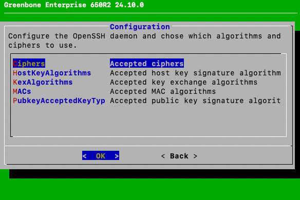
Рис. 6.36 Настройка используемых алгоритмов и шифров¶
Выберите желаемое значение(я) и нажмите Космос.
→ Активированные значения отмечены значком *.
Примечание
По умолчанию все значения включены для всех настроек.
Настройки также можно сбросить до значений по умолчанию, отменив выбор всех значений и сохранив изменения.
Нажимать Входить.
→ Сообщение информирует о том, что изменения необходимо сохранить.
Нажимать Входить чтобы закрыть сообщение.

6.2.4.4.3 Включение и управление защитой входа в систему¶
Может быть включена защита входа в систему, что означает, что если несколько последовательных попыток входа в систему окажутся неудачными, пользователь будет заблокирован.
Примечание
Самостоятельное сканирование, то есть сканирование, в котором устройство является частью объекта сканирования, может активировать защиту входа в систему.
Защита входа не блокирует вход через ключ администратора SSH, если такой ключ установлен (см. главу 6.2.4.4.4).
Настройка защиты входа в систему
Защиту входа можно включить и управлять ею следующим образом:
Выбирать Настройка и нажмите Входить.
Выбирать Услуги и нажмите Входить.
Выбирать SSH и нажмите Входить.
Выбирать Защита входа и нажмите Входить.
Выбирать Защита входа и нажмите Входить (видеть Рис. 6.37).
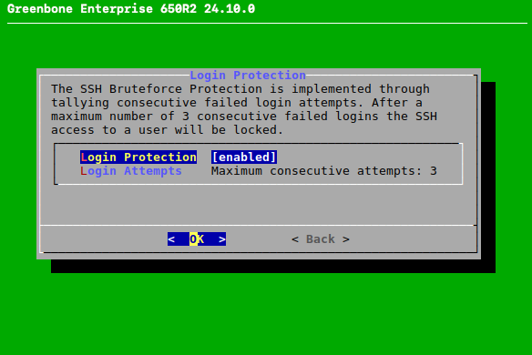
Рис. 6.37 Установка защиты входа в систему¶
→ Сообщение информирует о том, что защита входа может привести к блокировке доступа по SSH.
Выбирать Продолжать и нажмите Входить чтобы включить защиту входа.
Выбирать Попытки входа в систему и нажмите Входить.
Введите желаемое значение и нажмите Входить.
→ Сообщение информирует о том, что изменения необходимо сохранить.
Нажимать Входить чтобы закрыть сообщение.

Разблокировка заблокированной системы
Если система заблокирована после слишком большого количества неудачных попыток входа в систему, ее необходимо разблокировать с помощью доступа к консоли (последовательный порт, гипервизор или монитор/клавиатура) следующим образом:
Выбирать Настройка и нажмите Входить.
Выбирать Пользователь и нажмите Входить.
Выбирать Разблокировать SSH и нажмите Входить.
→ Счетчик попыток входа сбрасывается.
Нажимать Входить чтобы закрыть сообщение.
6.2.4.4.4 Добавление ключа администратора SSH¶
Открытые ключи SSH можно загрузить, чтобы обеспечить аутентификацию администраторов на основе ключей.
Примечание
Ключи SSH можно сгенерировать с помощью OpenSSH с помощью команды
ssh-кейгенв Linux илиputtygen.exeесли вы используете PuTTY в Microsoft Windows.Поддерживаются следующие форматы:
Эд25519, например
ssh-ed25519 AAAAB3NzaC1y...P3pCquVb admin@ak-sumkarРСА, например
ssh-rsa AAAAB3NzaC1y...P3pCquVb admin@ak-sumkar
Ключ администратора SSH можно загрузить следующим образом:
Выбирать Настройка и нажмите Входить.
Выбирать Услуги и нажмите Входить.
Выбирать SSH и нажмите Входить.
Выбирать Ключ администратора и нажмите Входить.
Откройте веб-браузер и введите отображаемый URL-адрес (см. Рис. 6.38).
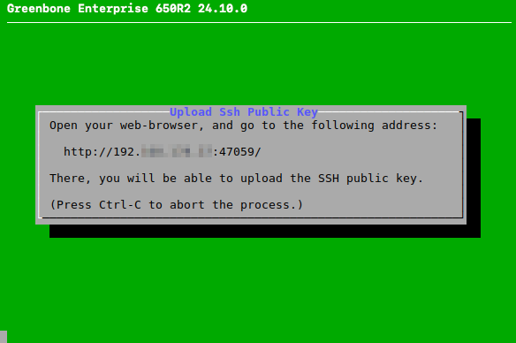
Рис. 6.38 Загрузка открытого ключа SSH¶
Нажмите Просматривать…, выберите открытый ключ SSH и нажмите Загрузить.
→ Когда загрузка завершится, появится сообщение о том, что вход через SSH возможен.

6.2.4.4.5 Отображение отпечатков пальцев¶
Устройство предоставляет разные ключи хоста для собственной аутентификации. Клиент решает, какой открытый ключ использовать.
Отпечатки открытых ключей, используемых SSH-сервером устройства, могут отображаться следующим образом:
Выбирать Настройка и нажмите Входить.
Выбирать Услуги и нажмите Входить.
Выбирать SSH и нажмите Входить.
Выбирать Отпечаток пальца и нажмите Входить.
→ Отображаются отпечатки SHA256 следующих ключей:
Эд25519
ЮАР
6.2.4.5 Настройка SNMP¶
Устройство поддерживает SNMPv3 для доступа на чтение и SNMPv1 для отправки ловушек посредством предупреждений и мониторинга жизненно важных параметров устройства.
Поддерживаемые параметры указаны в файле базы управляющей информации (MIB). Текущая MIB доступна в Портал «Ак Шумкар TechDoc».
SNMPv3 можно настроить следующим образом:
Выбирать Настройка и нажмите Входить.
Выбирать Услуги и нажмите Входить.
Выбирать SNMP и нажмите Входить.
Выбирать SNMP и нажмите Входить чтобы включить SNMP.
→ Отображается несколько новых опций (см. Рис. 6.39).
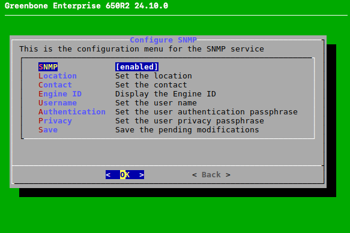
Рис. 6.39 Настройка SNMPv3¶
Выбирать Расположение и нажмите Входить.
Введите местоположение службы SNMP в поле ввода и нажмите Входить.
Выбирать Контакт и нажмите Входить.
Введите контакт службы SNMP в поле ввода и нажмите Входить.
Выбирать Имя пользователя и нажмите Входить.
Введите имя пользователя SNMP в поле ввода и нажмите Входить.
Примечание
При настройке парольной фразы для аутентификации и конфиденциальности обратите внимание, что устройство использует SHA-1 и AES128 соответственно.
Выбирать Аутентификация и нажмите Входить.
Введите парольную фразу для аутентификации пользователя SNMP в поле ввода и нажмите Входить.
Выбирать Конфиденциальность и нажмите Входить.
Введите парольную фразу конфиденциальности пользователя SNMP в поле ввода и нажмите Входить.
Примечание
После настройки пользователя идентификатор двигателя устройства можно отобразить, выбрав Идентификатор двигателя и нажатие Входить.
После этого проверьте доступ на чтение службы SNMP в Linux/Unix, используя
snmpwalk:

$ snmpwalk -v 3 -l authPriv -u user -a sha -A password -x aes -X key 192.168.222.115
iso.3.6.1.2.1.1.1.0 = STRING: "АК-ШУМКАР"
iso.3.6.1.2.1.1.3.0 = Timeticks: (347275248) 40 days, 4:39:12.48
iso.3.6.1.2.1.1.4.0 = STRING: «Ак Шумкар <info@ak-shumkar.net>»
...
Можно собрать следующую информацию:
Время работы
Сетевые интерфейсы
Память
Жесткий диск
Нагрузка
Процессор
6.2.4.6 Настройка порта для временного HTTP-сервера¶
По умолчанию порт для HTTP-загрузки и скачивания выбирается случайным образом.
Постоянный порт можно настроить следующим образом:
Выбирать Настройка и нажмите Входить.
Выбирать Услуги и нажмите Входить.
Выбирать Временный HTTP и нажмите Входить.
Выбирать Порт и нажмите Входить.
Введите порт в поле ввода и нажмите Входить.
→ Сообщение информирует о том, что изменения необходимо сохранить.
Нажимать Входить чтобы закрыть сообщение.
6.2.5 Настройка периодического резервного копирования¶
Устройство поддерживает периодическое автоматическое ежедневное резервное копирование. Резервные копии являются инкрементальными, что означает, что сохраняются только те данные, которые были изменены с момента последней резервной копии.
Следующие резервные копии хранятся локально или удаленно:
Последние 7 ежедневных резервных копий
Последние 5 еженедельных резервных копий
Последние 12 ежемесячных резервных копий
Резервные копии старше одного года будут удалены автоматически.
Периодическое резервное копирование автоматически выполняется в следующее время:
Во время ежедневного технического обслуживания (см. главу 6.2.13).
Перед обновлением ГСН (см. главу 6.3.4).
6.2.5.1 Включение периодического резервного копирования¶
Периодическое резервное копирование можно включить следующим образом:
Выбирать Настройка и нажмите Входить.
Выбирать Резервное копирование и нажмите Входить.
Выбирать Периодическое резервное копирование и нажмите Входить (видеть Рис. 6.40).
→ Периодическое резервное копирование включено.
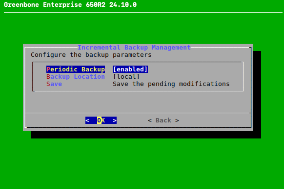
Рис. 6.40 Настройка периодического резервного копирования¶

6.2.5.2 Настройка удаленного сервера резервного копирования¶
По умолчанию резервные копии хранятся локально. Чтобы хранить их на удаленном сервере, сервер должен быть соответствующим образом настроен. Устройство использует протокол передачи файлов SSH (SFTP) для безопасной передачи резервных копий.
Удаленный сервер можно настроить следующим образом:
Выбирать Настройка и нажмите Входить.
Выбирать Резервное копирование и нажмите Входить.
Выбирать Место резервного копирования и нажмите Входить.
→ Добавлены дополнительные параметры для хранилища резервной копии (см. Рис. 6.41).
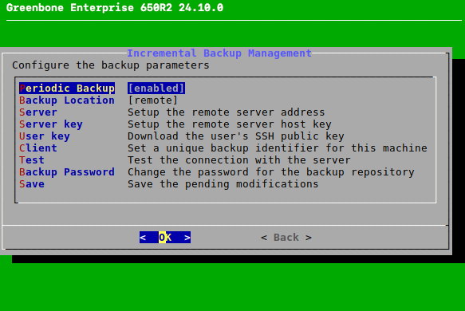
Рис. 6.41 Настройка удаленного сервера¶
Выбирать Сервер и нажмите Входить.
Введите адрес удаленного сервера в следующем формате:
имя пользователя@имяхоста[:порт]/каталогПримечание
Необязательный порт можно опустить, если сервер использует порт 22.
Выбирать ХОРОШО и нажмите Входить.
→ Сообщение информирует о том, что изменения необходимо сохранить.
Нажимать Входить чтобы закрыть сообщение.
Примечание
Устройство использует открытый ключ хоста SSH для идентификации удаленного сервера.
Ключ необходимо искать на удаленном сервере резервного копирования. В Linux и большинстве Unix-подобных систем его можно найти в разделе
/etc/ssh/ssh_host_*_key.pub.Ключ должен быть в формате открытого ключа OpenSSH.
Ожидаемая структура
<алгоритм> <ключ> <комментарий>.<ключ>раздел должен быть закодирован в Base64.<комментарий>раздел является необязательным.Пример:
ssh-rsa AAAAB3NzaC1y...P3pCquVb
Выбирать Ключ сервера и нажмите Входить.
Откройте веб-браузер и введите отображаемый URL-адрес (см. Рис. 6.42).
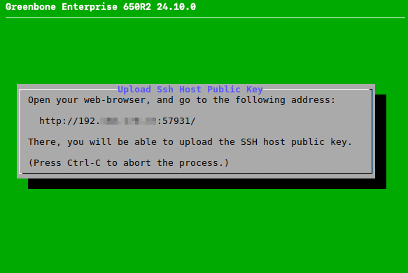
Рис. 6.42 Настройка ключа сервера¶
Нажмите Просматривать…, выберите открытый ключ хоста SSH и нажмите Загрузить.
Примечание
Устройство использует открытый ключ SSH для входа на удаленный сервер. Чтобы включить этот процесс входа в систему, открытый ключ SSH устройства должен быть включен в
авторизованные_ключифайл на удаленном сервере.Чтобы загрузить открытый ключ, выберите Ключ пользователя и нажмите Входить.
Откройте веб-браузер и введите отображаемый URL-адрес.
Загрузите PUB-файл.
Примечание
Если несколько устройств загружают свои резервные копии на один и тот же удаленный сервер, файлы должны быть различимы. Для этого необходимо определить уникальный идентификатор резервной копии. Если этот идентификатор не установлен, будет использоваться имя хоста.
Выбирать Клиент и нажмите Входить.
Введите идентификатор и нажмите Входить.
Примечание
Поскольку настройка удаленного резервного копирования, включая ключи, подвержена ошибкам, доступна процедура тестирования. Эта опция позволит проверить успешный вход в удаленную систему.
Выбирать Тест и нажмите Входить.
→ Проверяется вход в удаленную систему.
Примечание
При желании пароль хранилища резервных копий можно изменить, что рекомендуется.
Если несколько устройств используют один и тот же удаленный репозиторий резервных копий, рекомендуется, чтобы каждое устройство использовало свой собственный уникальный пароль резервного копирования.
Выбирать Резервный пароль и нажмите Входить.
Введите пароль в поле ввода и нажмите Входить.


6.2.6 Настройка специальных параметров обновления¶
6.2.6.1 Добавление ключа обновления¶
Эта опция предназначена для возможных целей восстановления. Загрузка ключа обновления не требуется для нормальной работы устройства и должна выполняться только по указанию Ак Шумкара. В таком случае «Ак Шумкар» предоставит ключ обновления.
Примечание
Ключ автоматически удаляется при успешном обновлении GOS.
Добавление ключа обновления с помощью редактора
Ключ можно добавить с помощью редактора следующим образом:
Выбирать Настройка и нажмите Входить.
Выбирать Обновление и нажмите Входить.
Выбирать Новый ключ обновления (редактор) и нажмите Входить (видеть Рис. 6.43).
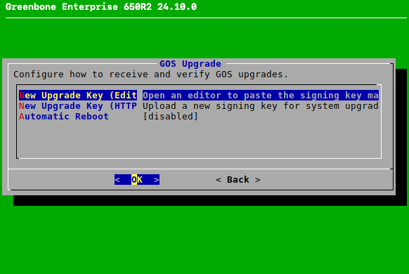
Рис. 6.43 Загрузка ключа обновления¶
→ Редактор открыт.
Введите содержимое ключа обновления.
Примечание
Важно вводить содержимое ключа, а не имя ключа (например
GBFeedSigningKeyUntil2026.gpg.asc).Содержимое ключа можно отобразить в любом текстовом редакторе или под Linux с помощью программы
меньше. Если контент открыт в текстовом редакторе, необходимо позаботиться о том, чтобы ничего не изменить.Нажимать Ctrl + С чтобы сохранить изменения.
Нажимать Ctrl + Х закрыть редактор.
→ Сообщение информирует об успешной загрузке ключа обновления.
Нажимать Входить чтобы закрыть сообщение.
→ Оба пункта меню загрузки ключа временно скрыты. Вместо этого опция меню Удалить ключ обновления отображается (см. главу 6.2.6.2).

Добавление ключа обновления через HTTP
Ключ можно добавить через HTTP следующим образом:
Выбирать Настройка и нажмите Входить.
Выбирать Обновление и нажмите Входить.
Выбирать Новый ключ обновления (HTTP) и нажмите Входить (видеть Рис. 6.43).
Откройте веб-браузер и введите отображаемый URL-адрес.
Нажмите Просматривать…, выберите ключ обновления и нажмите Загрузить.
→ Сообщение информирует, что ключ обновления успешно загружен.
Нажимать Входить чтобы закрыть сообщение.
→ Оба пункта меню загрузки ключа временно скрыты. Вместо этого опция меню Удалить ключ обновления отображается (см. главу 6.2.6.2).
6.2.6.2 Удаление ключа обновления¶
Ключ обновления можно удалить следующим образом:
Выбирать Настройка и нажмите Входить.
Выбирать Обновление и нажмите Входить.
Выбирать Удалить ключ обновления и нажмите Входить.
→ Сообщение информирует, что ключ обновления удален.
Нажимать Входить чтобы закрыть сообщение.
6.2.6.3 Настройка автоматической перезагрузки¶
Устройство может автоматически перезагрузиться после успешного обновления GOS. Однако перезагрузка выполняется только при необходимости, например, при обновлении ядра GOS Linux.
По умолчанию автоматическая перезагрузка отключена. В этом случае после обновления ГОС, требующего перезагрузки, выводится предупреждение самопроверки с просьбой перезагрузиться вручную.
Примечание
Этот параметр применяется только к тому устройству, на котором он настроен. Это относится не ко всем датчикам, подключенным к прибору. Если датчики должны перезагружаться автоматически, каждый датчик необходимо настроить отдельно.
Выбирать Настройка и нажмите Входить.
Выбирать Обновление и нажмите Входить.
Выбирать Автоматическая перезагрузка и нажмите Входить.
→ Предупреждение информирует о том, что устройство перезагрузится сразу после обновления GOS (см. Рис. 6.44).
Примечание
Все сканирования, выполняемые в это время, будут прекращены. Это может привести к потере несохраненных данных.
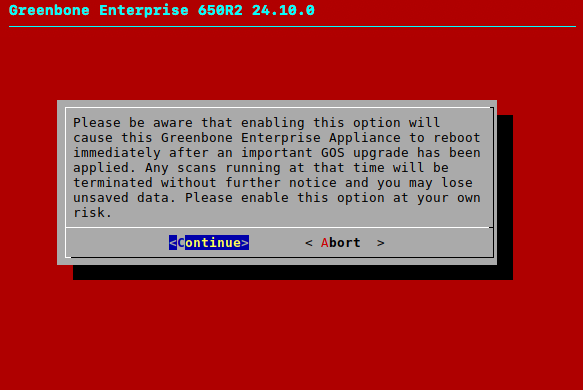
Рис. 6.44 Включение автоматической перезагрузки¶
Выбирать Продолжать и нажмите Входить.

6.2.7 Настройка синхронизации каналов¶
АК-ШУМКАРСКОЕ ПРЕДПРИЯТИЕ КОРМОВ предоставляет обновления для тестов уязвимостей (VT), данных SCAP (CVE и CPE), а также рекомендаций CERT-Bund и DFN-CERT. Кроме того, канал содержит обновления для GOS, а также обновления для конфигураций сканирования, политик соответствия, списков портов и форматов отчетов.
Для загрузки и использования AK-SHUMKAR ENTERPRISE FEED требуется ключ подписки (см. главу 6.1.1). Если на устройстве не хранится действительный ключ, вместо AK-SHUMKAR ENTERPRISE FEED используется общедоступный канал AK-SHUMKAR COMMUNITY FEED.
Примечание
Модель АК-ШУМКАР БАЗОВАЯ не может быть использована с АК-ШУМКАР СООБЩЕСТВЕННОЙ ПОДАЧЕЙ.
6.2.7.1 Добавление ключа подписки AK-SHUMKAR ENTERPRISE FEED¶
Примечание
Нет необходимости добавлять ключ подписки AK-SHUMKAR ENTERPRISE FEED на вновь доставленное устройство, поскольку ключ уже предварительно установлен. В качестве исключения модель АК-ШУМКАР БЕЙСИК не поставляется с предустановленным ключом подписки и не может использоваться с АК-ШУМКАР СООБЩЕСТВЕННОЙ ЛЕНТОЙ.
Наличие ключа подписки на устройстве можно проверить, выбрав О и нажатие Входить в меню администрирования ГСН.
Новый ключ подписки можно сохранить на устройстве, загрузив его через HTTP или скопировав и вставив его с помощью редактора.
Для получения информации о ключе подписки см. главу 6.1.1.
Примечание
Новый ключ заменит любой ключ, уже сохраненный на устройстве.
При перезаписи ключа подписки состояние канала на устройстве сбрасывается на «Нет канала». Обновление канала необходимо выполнить после добавления нового ключа подписки.
Добавление ключа подписки через HTTP
Ключ можно добавить через HTTP следующим образом:
Выбирать Настройка и нажмите Входить.
Выбирать Кормить и нажмите Входить.
Выбирать Ключ (HTTP) и нажмите Входить.
→ Сообщение информирует о том, что текущий ключ подписки будет перезаписан (см. Рис. 6.45).
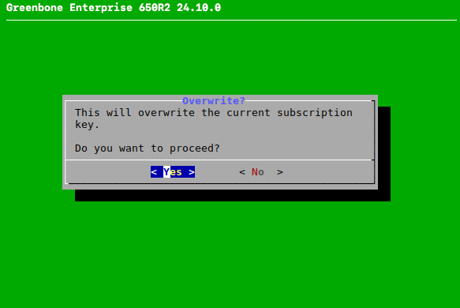
Рис. 6.45 Перезапись текущего ключа подписки¶
Выбирать Да и нажмите Входить.
Откройте веб-браузер и введите отображаемый URL-адрес.
Нажмите Просматривать…, выберите ключ подписки и нажмите Загрузить.
→ Сообщение информирует, что ключ подписки успешно загружен.
Нажимать Входить чтобы закрыть сообщение.
Выполните обновление канала, как описано в главе 6.3.6.

Добавление ключа подписки с помощью редактора
Ключ можно добавить с помощью редактора следующим образом:
Выбирать Настройка и нажмите Входить.
Выбирать Кормить и нажмите Входить.
Выбирать Ключ (редактор) и нажмите Входить.
→ Сообщение информирует о том, что текущий ключ подписки будет перезаписан (см. Рис. 6.45).
Выбирать Да и нажмите Входить.
→ Редактор открыт.
Введите содержимое ключа подписки.
Примечание
Важно вводить содержимое ключа, а не имя ключа (например
gsf2022122017).Содержимое ключа можно отобразить в любом текстовом редакторе или под Linux с помощью программы
меньше. Если контент открыт в текстовом редакторе, необходимо позаботиться о том, чтобы ничего не изменить.Нажимать Ctrl + С чтобы сохранить изменения.
Нажимать Ctrl + Х закрыть редактор.
→ Сообщение информирует, что ключ подписки успешно загружен.
Нажимать Входить чтобы закрыть сообщение.
Выполните обновление канала, как описано в главе 6.3.6.
6.2.7.2 Включение или отключение синхронизации¶
Автоматическую синхронизацию AK-SHUMKAR ENTERPRISE FEED можно отключить, если устройство не имеет доступа к Интернету и не должно пытаться получить доступ к услугам «Ак Шумкар» в Интернете. Синхронизацию можно снова включить.
Синхронизацию можно включить или отключить следующим образом:
Выбирать Настройка и нажмите Входить.
Выбирать Кормить и нажмите Входить.
Выбирать Синхронизация и нажмите Входить.
→ Синхронизация отключена.
Синхронизацию можно включить, выбрав Синхронизация и нажатие Входить снова.
Примечание
Время автоматической синхронизации подачи можно установить, изменив время обслуживания (см. главу 6.2.13).
6.2.7.3 Настройка порта синхронизации¶
AK-SHUMKAR ENTERPRISE FEED предоставляется компанией «Ак Шумкар» в двух разных портах:
24/ПТС
443/ПТС
Хотя порт 24/TCP является портом по умолчанию, многие настройки брандмауэра не разрешают трафик через этот порт в Интернете. Поэтому изменение порта на 443/TCP возможно, поскольку этот порт чаще всего разрешен.
Примечание
Порт 443/TCP обычно используется HTTPS-трафиком.
Хотя устройство использует этот порт, фактический трафик — не HTTPS, а SSH, поскольку устройство использует rsync встроен в SSH для получения канала.
Брандмауэры, использующие глубокую проверку и осведомленность о приложениях, по-прежнему могут отклонять трафик.
Порт можно настроить следующим образом:
Выбирать Настройка и нажмите Входить.
Выбирать Кормить и нажмите Входить.
Выбирать Ак Шумкар Сервер и нажмите Входить.
Выбирать Порт синхронизации и нажмите Входить.
Выберите нужный порт и нажмите Входить (видеть Рис. 6.46).
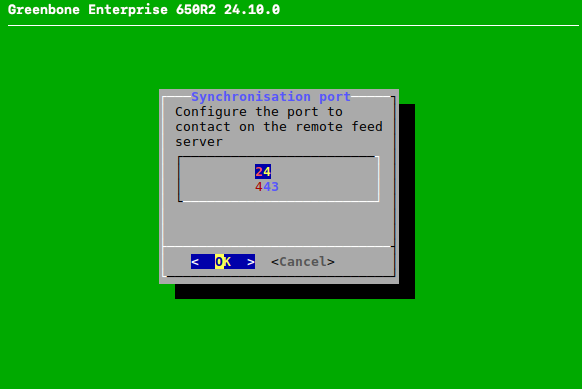
Рис. 6.46 Настройка порта синхронизации¶

6.2.7.4 Настройка прокси-сервера синхронизации¶
Если политика безопасности не разрешает прямой доступ к Интернету, устройство может использовать прокси-службу HTTPS. Этот прокси-сервер не должен проверять трафик SSL/TLS, но должен поддерживать метод CONNECT. Трафик, проходящий через прокси, не HTTPS, а SSH, инкапсулированный в http-прокси.
Прокси можно настроить следующим образом:
Выбирать Настройка и нажмите Входить.
Выбирать Кормить и нажмите Входить.
Выбирать Ак Шумкар Сервер и нажмите Входить.
Выбирать Синхронизировать прокси и нажмите Входить.
Введите URL-адрес прокси-сервера в поле ввода (см. Рис. 6.47).
Примечание
URL-адрес должен иметь форму
http://прокси:порт.Рис. 6.47 Настройка прокси синхронизации¶

6.2.7.5 Удаление ключа подписки AK-SHUMKAR ENTERPRISE FEED¶
Ключ подписки можно удалить. Это полезно, если срок службы прибора подошел к концу и он больше не используется. Очистка гарантирует, что на устройстве больше не будет лицензий. Без ключа подписки устройство будет получать только канал сообщества АК-ШУМКАР.
Примечание
Модель АК-ШУМКАР БАЗОВАЯ не может быть использована с АК-ШУМКАР СООБЩЕСТВЕННОЙ ПОДАЧЕЙ.
Очистку можно провести следующим образом:
Выбирать Настройка и нажмите Входить.
Выбирать Кормить и нажмите Входить.
Выбирать Очистка и нажмите Входить.
→ Предупреждение информирует о том, что после очистки синхронизация с AK-SHUMKAR ENTERPRISE FEED больше невозможна (см. Рис. 6.48).
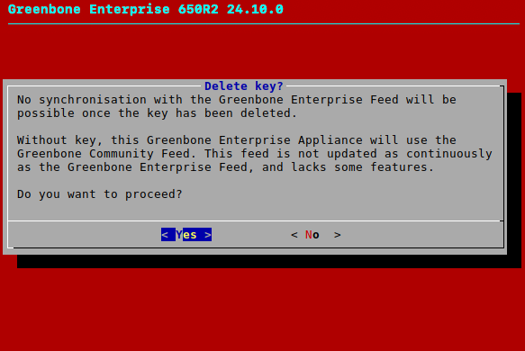
Рис. 6.48 Удаление ключа подписки¶
Выбирать Да и нажмите Входить.
→ Сообщение информирует, что ключ подписки удален.
Нажимать Входить чтобы закрыть сообщение.

6.2.8 Настройка устройства в качестве ведущего устройства/датчика Airgap¶
Функция Airgap позволяет устройству, не подключенному напрямую к Интернету, получать обновления каналов и обновлений GOS.
Требуется как минимум два прибора:
Датчик воздушного зазора: расположен в охраняемой зоне и не подключен к Интернету.
Мастер Airgap: подключен к Интернету
Примечание
Технического ограничения на количество датчиков Airgap на одно ведущее устройство Airgap нет, однако могут применяться ограничения производительности сторонних систем, например, диодного сервера данных.
Устройства Airgap также могут быть объединены в цепочку, что означает, что один датчик Airgap становится главным для одного или нескольких других датчиков Airgap.
Для функции Airgap доступны два варианта:
USB-накопитель Ак Шумкар Airgap
Диодный сервер данных Airgap (S)FTP
Следующие модели устройств можно настроить для USB Airgap:
АК-ШУМКАР 400 и выше в качестве USB-мастера Airgap
АК-ШУМКАР 400 и выше в качестве USB-датчика Airgap
Следующие модели устройств можно настроить для (S)FTP Airgap:
АК-ШУМКАР 400 и выше в качестве мастера Airgap (S)FTP
АК-ШУМКАР 150 R2 и выше в качестве датчика Airgap (S)FTP
АК-ШУМКАР CENO и выше в качестве датчика Airgap (S)FTP
6.2.8.1 Использование USB-накопителя Airgap¶
Обновления и обновления загружаются с устройства, подключенного к Интернету, и копируются на USB-накопитель. Затем USB-накопитель можно использовать для обновления другого устройства.
Примечание
USB-накопитель должен быть специальным USB-накопителем Airgap, предоставленным компанией «Ак Шумкар». Свяжитесь с Команда поддержки Ак Шумкар предоставление номера клиента для запроса соответствующего USB-накопителя Airgap.
По умолчанию аппаратные устройства, которые можно использовать для USB Airgap, настроены как USB-датчики Airgap. Если к ним подключен подходящий USB-накопитель Airgap, запустится функция USB-датчика Airgap. Это означает, что данные канала будут скопированы с USB-накопителя на устройство, а затем на устройстве будет выполнено обновление канала на основе скопированных данных.
Настройка устройства в качестве ведущего USB-устройства Airgap отключает функциональность USB-датчика Airgap. Отключение функции главного USB-устройства Airgap снова активирует функциональность USB-датчика Airgap.
USB-накопитель можно заранее проверить на наличие вредоносного ПО с помощью шлюза безопасности.
Перенос данных с помощью USB-накопителя Airgap осуществляется следующим образом:
В меню администрирования ГСН мастера Airgap выберите Настройка и нажмите Входить.
Выбирать Кормить и нажмите Входить.
Выбирать Мастер воздушного зазора и нажмите Входить.
Выбирать USB-мастер и нажмите Входить (видеть Рис. 6.49).
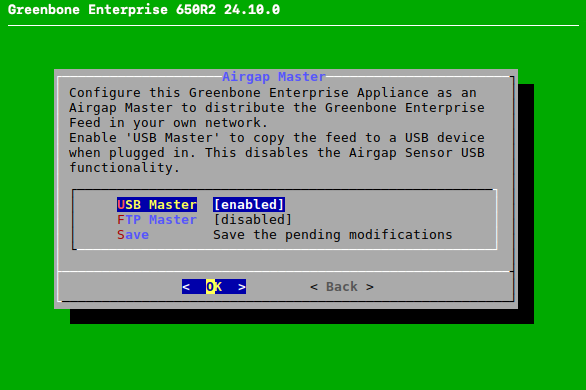
Рис. 6.49 Настройка USB-мастера Airgap¶
Выбирать Сохранять и нажмите Входить.
Примечание
Настройка устройства в качестве ведущего USB-устройства Airgap отключает возможность одновременной настройки устройства в качестве USB-датчика Airgap.
Подключите USB-накопитель Airgap к мастеру Airgap.
→ Передача данных начнется автоматически.
После завершения передачи данных подключите USB-накопитель Airgap к датчику Airgap.
→ Передача данных начнется автоматически.

6.2.8.2 Использование FTP-сервера Airgap (S)¶
Обновления и обновления могут предоставляться через (S)FTP-сервер, работающий как диод данных. Диод данных — это однонаправленный шлюз безопасности, позволяющий передавать данные только в одном направлении.
Передача может быть незашифрованной через FTP (см. главу 6.2.8.2.1) или зашифровано через SFTP на основе SSH (см. главу 6.2.8.2.2).
Обновление (S)FTP Airgap выполняется вручную (см. главу). 6.3.6) или выполняется автоматическое обновление ленты во время обслуживания.
Примечание
У мастера Airgap должно быть достаточно времени для загрузки канала Airgap (S)FTP на (S)FTP-сервер. Для более медленных соединений может быть целесообразным установить время обслуживания датчика Airgap как минимум на три часа позже времени обслуживания мастера Airgap (см. 6.2.9).
На (S)FTP-сервере должно быть доступно не менее 6 ГБ дискового пространства. Поскольку в будущем размер канала будет продолжать увеличиваться, рекомендуется использовать доступный размер диска 24 ГБ.
6.2.8.2.1 Передача с использованием FTP¶
Конфигурация установки Airgap FTP выполняется следующим образом:
В меню администрирования ГСН мастера Airgap выберите Настройка и нажмите Входить.
Выбирать Кормить и нажмите Входить.
Выбирать Мастер воздушного зазора и нажмите Входить.
Выбирать FTP-мастер и нажмите Входить.
Выбирать Местоположение главного FTP-сервера и нажмите Входить.
Введите путь к FTP-серверу в поле ввода и нажмите Входить.
Требуемый формат пути:
фтп://1.2.3.4илиftp://path.to.ftpserver.Опционально можно настроить порт, например
фтп://1.2.3.4:21.Если порт не настроен, используется FTP-порт 21 по умолчанию. Если необходимо использовать порт, отличный от 21, его необходимо настроить явно.
→ Сообщение информирует о том, что изменения необходимо сохранить.
Нажимать Входить чтобы закрыть сообщение.
→ Отобразятся пункты меню для настройки FTP-сервера (см. Рис. 6.50).
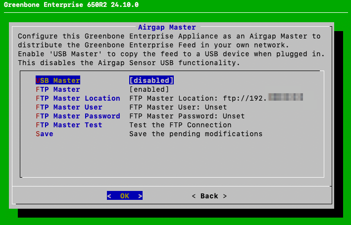
Рис. 6.50 Настройка FTP-сервера для мастера Airgap¶
Выбирать Главный пользователь FTP и нажмите Входить.
Введите пользователя, используемого для входа на FTP-сервер, в поле ввода и нажмите Входить.
→ Сообщение информирует о том, что изменения необходимо сохранить.
Нажимать Входить чтобы закрыть сообщение.
Выбирать Мастер-пароль FTP и нажмите Входить.
Введите пароль, используемый для входа на FTP-сервер, в поле ввода и нажмите Входить.
→ Сообщение информирует о том, что изменения необходимо сохранить.
Нажимать Входить чтобы закрыть сообщение.
Выбирать Мастер-тест FTP и нажмите Входить.
→ Проверяется, работает ли логин с введенной информацией.
Выбирать Сохранять и нажмите Входить.
В меню администрирования ГСН датчика Airgap выберите Настройка и нажмите Входить.
Выбирать Кормить и нажмите Входить.
Выбирать Датчик воздушного зазора и нажмите Входить.
Выполните шаги с 5 по 15 в меню администрирования GOS датчика Airgap с теми же записями, что и для мастера Airgap.
Примечание
Пункты меню имеют немного другие названия, чем в меню администрирования ГСН мастера Airgap (см. Рис. 6.51).
→ Передача данных начнется при следующем обновлении фида.
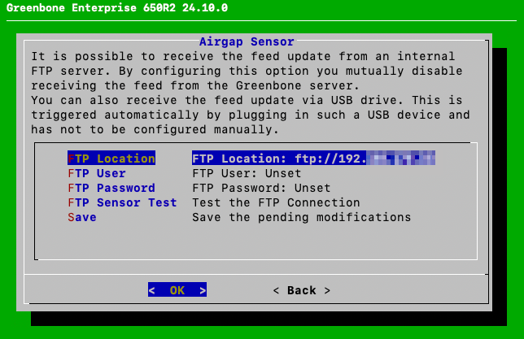
Рис. 6.51 Настройка FTP-сервера для датчика Airgap¶


6.2.8.2.2 Передача с использованием SFTP¶
Конфигурация установки Airgap SFTP выполняется следующим образом:
В меню администрирования ГСН мастера Airgap выберите Настройка и нажмите Входить.
Выбирать Кормить и нажмите Входить.
Выбирать Мастер воздушного зазора и нажмите Входить.
Выбирать FTP-мастер и нажмите Входить.
Выбирать Местоположение главного FTP-сервера и нажмите Входить.
Введите путь к SFTP-серверу в поле ввода и нажмите Входить.
Требуемый формат пути:
SFTP://1.2.3.4илиsftp://path.to.sftpserver.Опционально можно настроить порт, например
SFTP://1.2.3.4:21.Если порт не настроен, по умолчанию используется порт SFTP 21. Если необходимо использовать порт, отличный от 21, его необходимо настроить явно.
→ Сообщение информирует о том, что изменения необходимо сохранить.
Нажимать Входить чтобы закрыть сообщение.
→ Отображаются пункты меню для настройки SFTP-сервера (см. Рис. 6.52).
Рис. 6.52 Настройка SFTP-сервера для мастера Airgap¶
Выбирать Главный пользователь FTP и нажмите Входить.
Введите пользователя, используемого для входа на SFTP-сервер, в поле ввода и нажмите Входить.
→ Сообщение информирует о том, что изменения необходимо сохранить.
Нажимать Входить чтобы закрыть сообщение.
Выбирать Главные ключи хоста SFTP и нажмите Входить для получения информации об открытом ключе настроенного SFTP-сервера.
Проверьте отпечатки пальцев и подтвердите их, нажав Входить.
→ Сообщение информирует о том, что
известные_хостыбыли обновлены.Нажимать Входить чтобы закрыть сообщение.
Выбирать Показать открытый ключ SFTP и нажмите Входить.
→ Отображается открытый ключ, который будет использоваться для установления SSH-соединения.
Примечание
Этот ключ необходимо добавить в
авторизованные_ключинастроенного SFTP-сервера.Нажимать д выйти из программы просмотра.
Выбирать Мастер-тест FTP и нажмите Входить.
→ Проверяется, работает ли логин с введенной информацией.
Выбирать Сохранять и нажмите Входить.
В меню администрирования ГСН датчика Airgap выберите Настройка и нажмите Входить.
Выбирать Кормить и нажмите Входить.
Выбирать Датчик воздушного зазора и нажмите Входить.
Выполните шаги с 5 по 17 в меню администрирования GOS датчика Airgap с теми же записями, что и для мастера Airgap.
Примечание
Пункты меню имеют немного другие названия, чем в меню администрирования ГСН мастера Airgap (см. Рис. 6.53).
→ Передача данных начнется при следующем обновлении фида.
Рис. 6.53 Настройка SFTP-сервера для датчика Airgap¶


6.2.9 Настройка синхронизации времени¶
Для синхронизации устройства с центральными серверами времени устройство поддерживает протокол сетевого времени (NTP). Можно настроить до четырех различных серверов NTP. Устройство выберет наиболее подходящий сервер. В случае сбоя сервера автоматически используется другой сервер.
Поддерживаются как IP-адреса, так и DNS-имена.
Примечание
Синхронизация часового пояса и летнего времени не поддерживается NTP. Часовой пояс устройства всегда UTC±00:00.
Параметры NTP можно настроить следующим образом:
Выбирать Настройка и нажмите Входить.
Выбирать Синхронизация времени и нажмите Входить.
Выбирать Синхронизация времени и нажмите Входить.
→ Синхронизация времени включена.
Выберите нужный сервер времени и нажмите Входить (видеть Рис. 6.54).
Рис. 6.54 Настройка параметров NTP¶
Введите сервер времени в поле ввода и нажмите Входить.
→ Сообщение информирует о том, что изменения необходимо сохранить.
Нажимать Входить чтобы закрыть сообщение.

6.2.10 Выбор раскладки клавиатуры¶
Раскладку клавиатуры устройства можно изменить следующим образом:
Выбирать Настройка и нажмите Входить.
Выбирать Клавиатура и нажмите Входить.
→ Отображаются все доступные раскладки клавиатуры. Текущий макет имеет аннотацию (выбрано) (видеть Рис. 6.55).
Рис. 6.55 Выбор раскладки клавиатуры¶
Выберите нужную раскладку клавиатуры и нажмите Входить.
→ Появится сообщение с просьбой подтвердить изменение.
Выбирать Да и нажмите Входить.
→ Сообщение информирует о том, что макет был изменен.

6.2.11 Настройка параметров электронной почты¶
Если отчеты о сканировании уязвимостей или аудите соответствия должны доставляться по электронной почте, устройство сначала необходимо подключить к серверу, который действует как почтовый концентратор. Такой сервер также называют «почтовым ретранслятором», «ретрансляционным хостом» или «умным хостом». По умолчанию устройство не доставляет электронные письма напрямую в Интернет, а только косвенно через почтовый хаб, через который они затем должны пересылаться на почтовые серверы получателей. Почтовый концентратор должен поддерживать простой протокол передачи почты (SMTP).
Устройство не сохраняет электронные письма в случае сбоя доставки и не предпринимает второй попытки доставки.
Примечание
Устройство реализует агент передачи почты Postfix. Возможно, для работы с устройством почтовый концентратор необходимо правильно настроить. Информацию о специальных конфигурациях для этого случая можно найти в документации mailhub.
Кроме того, любая защита от спама в почтовом центре, например серый список, должна быть отключена специально для этого устройства.
6.2.11.1 Настройка почтового хаба¶
Почтовый хаб можно настроить следующим образом:
Выбирать Настройка и нажмите Входить.
Выбирать Почта и нажмите Входить.
Выбирать Почта и нажмите Входить.
Введите URL-адрес почтового хаба в поле ввода (см. Рис. 6.56).
Рис. 6.56 Настройка почтового хаба¶
Выбирать ХОРОШО и нажмите Входить.
→ Сообщение информирует о том, что изменения необходимо сохранить.
Нажимать Входить чтобы закрыть сообщение.
Примечание
При желании можно настроить порт, используемый для почтового концентратора. Однако ручная настройка не требуется.
Если порт не настроен, порты по умолчанию для SMTP(S) используются автоматически.
Выбирать Порт почтового хаба и нажмите Входить.
Введите порт в поле ввода и нажмите Входить.
→ Сообщение информирует о том, что изменения необходимо сохранить.
Нажимать Входить чтобы закрыть сообщение.

6.2.11.2 Настройка SMTP¶
6.2.11.2.1 Настройка SMTP-аутентификации для Mailhub¶
Примечание
Устройство поддерживает аутентификацию только через расширение SMTP-Auth. Аутентификация через NTLM не поддерживается.
При желании аутентификацию SMTP можно настроить для используемого почтового концентратора следующим образом:
Выбирать Настройка и нажмите Входить.
Выбирать Почта и нажмите Входить.
Выбирать Требования SMTP-аутентификации и нажмите Входить чтобы включить аутентификацию SMTP (см. Рис. 6.57).
Рис. 6.57 Настройка SMTP-аутентификации¶
Выбирать Имя пользователя SMTP и нажмите Входить.
Введите имя пользователя учетной записи, используемой для аутентификации, в поле ввода и нажмите Входить.
→ Сообщение информирует о том, что изменения необходимо сохранить.
Нажимать Входить чтобы закрыть сообщение.
Выбирать Пароль и нажмите Входить.
Дважды введите пароль учетной записи, используемой для аутентификации, и нажмите Вкладка.
Примечание
Пароли не должны быть длиннее 128 символов.
Нажимать Входить.

6.2.11.2.2 Обеспечение использования SMTPS¶
SMTPS можно включить, чтобы всегда защищать трафик электронной почты с помощью TLS.
Примечание
Поддерживаются только TLSv1, TLSv1.2 и TLSv1.3.
Если SMTPS включен, почтовый концентратор также должен поддерживать SMTPS, иначе отправка электронной почты не удастся.
Даже если SMTPS не включен, GOS автоматически попытается использовать шифрование через STARTTLS. Только если почтовый концентратор не поддерживает STARTTLS, трафик электронной почты не зашифрован.
SMTPS может быть реализован следующим образом:
Выбирать Настройка и нажмите Входить.
Выбирать Почта и нажмите Входить.
Выбирать SMTP принудительное использование TLS и нажмите Входить.
6.2.11.3 Настройка размера включенных или прикрепленных отчетов¶
Максимальный размер (в байтах) отчетов, включенных в электронное письмо или прикрепленных к нему (см. главу 9.12) может быть ограничено следующим образом:
Выбирать Настройка и нажмите Входить.
Выбирать Почта и нажмите Входить.
Выбирать Макс. Размер вложения электронной почты или Макс. Электронная почта включает размер и нажмите Входить.
Рис. 6.58 Настройка максимального размера включенных или прикрепленных отчетов¶
→ Предупреждение информирует о том, что для изменения размера требуется перезапуск диспетчера уязвимостей «Ак Шумкар», что приведет к остановке всех запущенных в данный момент проверок.
Введите максимальный размер (в байтах) в поле ввода (см. Рис. 6.58).
Выбирать ХОРОШО и нажмите Входить.
→ Сообщение информирует о том, что изменения необходимо сохранить.
Нажимать Входить чтобы закрыть сообщение.

6.2.12 Настройка сбора журналов¶
Устройство поддерживает настройку центрального сервера журналов для сбора журналов. На удаленный сервер журналов можно отправлять либо только журналы, связанные с безопасностью, либо все системные журналы.
Журналы, связанные с безопасностью, содержат только сообщения от средств регистрации безопасности и аутентификации:
авторизация
авторизация
безопасность
Кроме того, полные журналы содержат следующие возможности:
хрон
демон
FTP
Керн
лп
лпр
НТП
почта
новости
системный журнал
пользователь
uucp
консоль
Solaris-Cron
местный0 – местный7
Устройство использует протокол системного журнала. Централизованный сбор журналов позволяет осуществлять централизованный анализ, управление и мониторинг журналов. Кроме того, журналы всегда хранятся локально.
Для каждого типа журналов (журналов безопасности или всех системных журналов) можно настроить отдельный сервер журналирования.
Для передачи можно использовать UDP (по умолчанию), TLS и TCP.
TCP обеспечивает доставку журналов даже в случае потери пакетов.
Если во время передачи по UDP происходит потеря пакета, журналы теряются.
TLS допускает дополнительную аутентификацию отправителя через TLS. Поддерживаются только TLS 1.2 и TLS 1.3. Этот процесс не соответствует RFC 5425.
Примечание
Часовой пояс устройства (UTC±00:00) используется для отметок времени журнала, если он не настроен на сервере системного журнала.
6.2.12.1 Настройка сервера журналирования¶
Сервер журналирования можно настроить следующим образом:
Выбирать Настройка и нажмите Входить.
Выбирать Удаленный системный журнал и нажмите Входить.
Выбирать Системный журнал безопасности и нажмите Входить чтобы включить журналы безопасности (см. Рис. 6.59).
или
Выбирать Полный системный журнал и нажмите Входить чтобы включить все системные журналы (см. Рис. 6.59).
Примечание
Оба журнала могут быть включены.
Рис. 6.59 Настройка журналов¶
Выбирать Пульт безопасности и нажмите Входить чтобы установить URL-адрес сервера регистрации для журналов, связанных с безопасностью.
или

Выбирать Полный удаленный и нажмите Входить чтобы установить URL-адрес сервера регистрации для всех системных журналов.
Введите URL-адрес сервера регистрации, включая желаемый протокол, в поле ввода (см. Рис. 6.60).
Примечание
Если порт не указан, используется порт по умолчанию 514.
Если протокол не указан, используется UDP.
Если используется TLS, должен существовать сертификат HTTPS (см. главу 6.2.12.2).
→ Сообщение информирует о том, что изменения необходимо сохранить.
Рис. 6.60 Настройка сервера журналирования¶
Нажимать Входить чтобы закрыть сообщение.

6.2.12.2 Управление сертификатами HTTPS для ведения журналов¶
Создание сертификата
Сертификатами HTTPS для ведения журналов можно управлять следующим образом:
Выбирать Настройка и нажмите Входить.
Выбирать Удаленный системный журнал и нажмите Входить.
Выбирать Сертификаты и нажмите Входить.
Выбирать Генерировать и нажмите Входить для создания сертификата.
→ Сообщение информирует о том, что текущий сертификат и закрытый ключ будут перезаписаны.
Подтвердите сообщение, выбрав Да и нажатие Входить.
Укажите настройки сертификата (см. Рис. 6.61), выбирать ХОРОШО и нажмите Входить.
Примечание
Допустимо создание сертификата без общего имени. Однако сертификат не следует создавать без (а) альтернативного имени субъекта (SAN).
Если используется общее имя, оно должно совпадать с именем одной из сетей SAN.
Рис. 6.61 Предоставление настроек сертификата¶
→ По завершении процесса появится сообщение о том, что сертификат можно загрузить.
Нажимать Входить чтобы закрыть сообщение.
Выбирать Сертификаты и нажмите Входить.
Выбирать Скачать и нажмите Входить.
Откройте веб-браузер и введите отображаемый URL-адрес.
Загрузите файл.
В меню администрирования ГСН нажмите Входить.
→ Когда устройство получает сертификат, в меню администрирования GOS отображается отпечаток сертификата для проверки.
Проверьте отпечаток пальца и подтвердите сертификат, нажав Входить.

Отображение текущего сертификата и отпечатков пальцев
Сертификат и соответствующие отпечатки пальцев могут отображаться следующим образом:
Выбирать Настройка и нажмите Входить.
Выбирать Удаленный системный журнал и нажмите Входить.
Выбирать Сертификаты и нажмите Входить.
Выбирать Показывать и нажмите Входить для отображения сертификата.
Выбирать Отпечатки пальцев и нажмите Входить для отображения отпечатка пальца.
→ Отображаются следующие отпечатки текущего активного сертификата:
SHA1
SHA256
6.2.13 Установка времени обслуживания¶
Во время технического обслуживания происходит ежедневная синхронизация кормов. Дополнительно выполняется инкрементное резервное копирование (см. главу 6.2.5).
Можно выбрать любое время в течение дня, кроме периода с 10:00 до 13:00. УНИВЕРСАЛЬНОЕ ГЛОБАЛЬНОЕ ВРЕМЯ. В это время Ак Шумкар обновляет ленту и отключает сервисы синхронизации.
Время обслуживания по умолчанию — случайное время между 3:00 и 5:00 по всемирному координированному времени±00:00.
Время обслуживания можно установить следующим образом:
Выбирать Настройка и нажмите Входить.
Выбирать Время и нажмите Входить.
Введите желаемое время обслуживания в поле ввода и нажмите Входить (видеть Рис. 6.62).
Примечание
Перед вводом время необходимо преобразовать в UTC.
Рис. 6.62 Настройка времени обслуживания¶
→ Сообщение информирует о том, что изменения необходимо сохранить.
Нажимать Входить чтобы закрыть сообщение.

6.3 Меню обслуживания¶
6.3.1 Выполнение самопроверки¶
Опция самопроверки проверяет настройку устройства. Он отображает неправильные или отсутствующие сведения о конфигурации, которые могут помешать правильной работе устройства. Проверяются следующие позиции:
Сетевое подключение
Разрешение DNS
Доступность ленты
Доступные обновления
Конфигурация пользователя
Самопроверка осуществляется следующим образом:

6.3.2 Выполнение и восстановление резервной копии¶
Примечание
В меню настраиваются периодические автоматические резервные копии. Настройка (см. главу 6.2.5).
Помимо автоматического резервного копирования, резервное копирование также можно выполнять вручную. Существует два разных типа резервного копирования с разными вариантами использования:
- Инкрементальные резервные копии
Сохраняются только данные, которые были изменены с момента последней резервной копии.
Если резервной копии нет, будет выполнено полное резервное копирование.
Инкрементная резервная копия может храниться удаленно на сервере или локально на устройстве.
По умолчанию сохраняются последние 7 ежедневных резервных копий, последние 5 еженедельных резервных копий и последние 12 ежемесячных резервных копий. Резервные копии старше одного года будут удалены автоматически.
Инкрементное резервное копирование также запускается перед обновлением GOS (см. главу 6.3.4), если автоматическое резервное копирование включено (см. главу 6.2.5).
- Резервное копирование USB
Сначала на устройстве создается отдельная полная (временная) резервная копия, а затем копируется на USB-накопитель.
Временная резервная копия на жестком диске впоследствии удаляется.
6.3.2.1 Инкрементное резервное копирование¶
В зависимости от места резервного копирования, настроенного в Главе 6.2.5, инкрементные резервные копии хранятся удаленно или локально.
Резервные копии включают пользовательские данные (например, задачи, отчеты, результаты) и настройки системы, то есть конфигурацию ГОС.
6.3.2.1.1 Выполнение инкрементного резервного копирования¶
Резервное копирование можно выполнить вручную следующим образом:
Выбирать Обслуживание и нажмите Входить.
Выбирать Резервное копирование и нажмите Входить.
Выбирать Инкрементное резервное копирование и нажмите Входить (видеть Рис. 6.64).
→ Сообщение информирует о том, что резервное копирование было запущено в фоновом режиме.
Кончик
Текущую работу системы можно отобразить, выбрав О и нажатие Входить в меню администрирования ГСН.
Рис. 6.64 Запуск резервного копирования вручную¶

6.3.2.1.2 Восстановление инкрементальной резервной копии¶
Примечание
Восстановить можно только резервные копии, созданные с помощью используемой в данный момент версии GOS или предыдущей версии GOS. Для ГОС 24.10 можно восстановить только резервные копии ГОС 22.04 или ГОС 24.10. Если необходимо восстановить более старую резервную копию, например, из GOS 20.08 или GOS 21.04, необходимо использовать устройство с соответствующей версией GOS.
Резервные копии, созданные с использованием версий GOS более высоких, чем текущая используемая версия GOS, не могут быть восстановлены. Сюда также входят более высокие уровни исправлений, чем используемый в настоящее время. Если необходимо восстановить резервную копию более высокой версии GOS, необходимо использовать устройство с соответствующей версией GOS.
Только резервные копии, созданные с использованием той же модели устройства (см. главу 3) можно восстановить.
Проверяется, совпадают ли подписные ключи резервной копии и устройства, на которое должна быть восстановлена резервная копия. Если ключи не совпадают, отображается предупреждение, и пользователь должен подтвердить, что ключ на устройстве следует перезаписать. Однако если резервная копия без ключа подписки восстанавливается, ключ на устройстве сохраняется.
Пароль суперпользователя не восстанавливается. Оно остается неизменным по сравнению с предыдущим значением до восстановления резервной копии.
Если настроен новый пароль резервного копирования (см. главу 6.2.5.2), и восстанавливается резервная копия, созданная с предыдущим паролем, предыдущий пароль не восстанавливается. Устройство всегда будет использовать последний настроенный резервный пароль.
Если есть вопросы, обращайтесь в Команда поддержки Ак Шумкар.
Резервную копию можно восстановить следующим образом:
Выбирать Обслуживание и нажмите Входить.
Выбирать Резервное копирование и нажмите Входить.
Выбирать Список и нажмите Входить.
Выберите нужную резервную копию и нажмите Входить.
Выбирать Да и нажмите Входить если необходимо загрузить как пользовательские данные, так и системные настройки.
или
Выбирать Нет и нажмите Входить если нужно загружать только пользовательские данные.
Примечание
Системные настройки включают в себя все конфигурации ГОС, например настройки сети.
Пользовательские данные включают в себя всю информацию о сканировании уязвимостей и управлении ими.
→ Предупреждение информирует о том, что все локальные настройки теряются при восстановлении резервной копии (см. Рис. 6.65).
Рис. 6.65 Восстановление резервной копии¶
Подтвердите сообщение, выбрав Да и нажатие Входить.
→ Сообщение информирует о том, что восстановление началось в фоновом режиме.
Кончик
Текущую работу системы можно отобразить, выбрав О и нажатие Входить в меню администрирования ГСН.

6.3.2.2 USB-резервное копирование¶
6.3.2.2.1 Выполнение резервного копирования на USB-накопитель¶
Резервное копирование на USB-накопитель можно выполнить следующим образом:
Подключите USB-накопитель к устройству.
Выбирать Обслуживание и нажмите Входить.
Выбирать Резервное копирование и нажмите Входить.
Выбирать USB-резервное копирование и нажмите Входить.
→ Если используемый USB-накопитель еще не отформатирован для использования в качестве устройства резервного копирования GOS, появится сообщение с вопросом, следует ли отформатировать USB-накопитель.
Если USB-накопитель уже отформатирован для использования в качестве устройства резервного копирования GOS, сообщение не отображается. Продолжайте с шага 7.
Выбирать Да и нажмите Входить.
→ Предупреждение информирует о том, что сохраненные данные будут удалены при форматировании диска.
Выбирать Да и нажмите Входить.
→ USB-накопитель отформатирован для использования в качестве USB-устройства резервного копирования GOS.
Выбирать Резервное копирование и нажмите Входить (видеть Рис. 6.66).
Рис. 6.66 Выполнение резервного копирования с помощью USB-накопителя¶
→ Появится сообщение с просьбой подтвердить резервное копирование.
Выбирать Да и нажмите Входить.
→ Сообщение информирует о том, что резервное копирование было запущено в фоновом режиме.
Кончик
Текущую работу системы можно отобразить, выбрав О и нажатие Входить в меню администрирования ГСН.

6.3.2.2.2 Восстановление резервной копии USB¶
Примечание
Восстановить можно только резервные копии, созданные с помощью используемой в данный момент версии GOS или предыдущей версии GOS. Для ГОС 24.10 можно восстановить только резервные копии ГОС 22.04 или ГОС 24.10. Если необходимо восстановить более старую резервную копию, например, из GOS 20.08 или GOS 21.04, необходимо использовать устройство с соответствующей версией GOS.
Резервные копии, созданные с использованием версий GOS более высоких, чем текущая используемая версия GOS, не могут быть восстановлены. Сюда также входят более высокие уровни исправлений, чем используемый в настоящее время. Если необходимо восстановить резервную копию более высокой версии GOS, необходимо использовать устройство с соответствующей версией GOS.
Только резервные копии, созданные с использованием той же модели устройства (см. главу 3) можно восстановить.
Проверяется, совпадают ли подписные ключи резервной копии и устройства, на которое должна быть восстановлена резервная копия. Если ключи не совпадают, отображается предупреждение, и пользователь должен подтвердить, что ключ на устройстве следует перезаписать. Однако если резервная копия без ключа подписки восстанавливается, ключ на устройстве сохраняется.
Пароль суперпользователя не восстанавливается. Оно остается неизменным по сравнению с предыдущим значением до восстановления резервной копии.
Если настроен новый пароль резервного копирования (см. главу 6.2.5.2), и восстанавливается резервная копия, созданная с предыдущим паролем, предыдущий пароль не восстанавливается. Устройство всегда будет использовать последний настроенный резервный пароль.
Если есть вопросы, обращайтесь в Команда поддержки Ак Шумкар.
Резервные копии можно восстановить с USB-накопителя следующим образом:
Подключите USB-накопитель, содержащий нужную резервную копию GOS, к устройству.
Примечание
В случае возникновения проблем следует попробовать другой USB-накопитель или другой USB-порт устройства.
Выбирать Обслуживание и нажмите Входить.
Выбирать Резервное копирование и нажмите Входить.
Выбирать USB-резервное копирование и нажмите Входить.
Выбирать Восстановить и нажмите Входить (видеть Рис. 6.66).
Выбирать Да и нажмите Входить если необходимо загрузить как пользовательские данные, так и системные настройки.
или
Выбирать Нет и нажмите Входить если нужно загружать только пользовательские данные.
Примечание
Системные настройки включают в себя все конфигурации ГОС, например настройки сети.
Пользовательские данные включают в себя всю информацию о сканировании уязвимостей и управлении ими.
→ Предупреждение информирует о том, что все локальные настройки теряются при восстановлении резервной копии (см. Рис. 6.67).
Рис. 6.67 Восстановление резервной копии¶
Подтвердите сообщение, выбрав Да и нажатие Входить.
→ Сообщение информирует о том, что восстановление началось в фоновом режиме.
Кончик
Текущую работу системы можно отобразить, выбрав О и нажатие Входить в меню администрирования ГСН.
6.3.3 Копирование данных и настроек на другое устройство с помощью Beaming¶
Текущее состояние устройства можно скопировать на другое устройство. Сюда входят пользовательские данные (например, задачи, отчеты, результаты) и настройки системы (имеется в виду конфигурация ГОС).
На принимающем устройстве пользователь может решить, восстанавливать ли только пользовательские данные или и пользовательские данные, и системные настройки.
Примечание
Восстановить можно только лучевые изображения, созданные с помощью используемой в данный момент версии GOS или предыдущей версии GOS. Для ГОС 24.10 можно восстановить только транслируемые изображения из ГОС 22.04 или ГОС 24.10. Если необходимо восстановить более старый образ передачи, например, из GOS 20.08 или GOS 21.04, необходимо использовать устройство с соответствующей версией GOS.
Передаваемые изображения, созданные с использованием версий GOS выше текущей используемой версии, не могут быть восстановлены. Сюда также входят более высокие уровни исправлений, чем используемый в настоящее время. Если необходимо восстановить лучевое изображение из более высокой версии GOS, необходимо использовать устройство с соответствующей версией GOS.
Восстановить передаваемый образ на устройстве можно только в том случае, если информация о выпуске, то есть список доступных обновлений GOS, на соответствующем устройстве актуальна. Для этого необходимо загрузить актуальную версию AK-SHUMKAR ENTERPRISE FEED.
В отношении моделей, между которыми возможно объединение лучей, действуют следующие ограничения:
Освещение допускается только прибору того же или более высокого класса (см. гл. 3).
Передача сигнала от устройства только с датчиком (АК-ШУМКАР 35 и АК-ШУМКАР 25В) поддерживается только на другое устройство только с датчиком. Передача устройств любого другого класса не поддерживается, даже передача настроек.
Передача на АК-ШУМКАР ФРИ не поддерживается.
Передаваться могут только данные или настройки функций, доступные на принимающем устройстве. обзор модели предоставляет информацию о том, доступна ли конкретная функция в используемой модели устройства.
Проверяется, идентичны ли ключи подписки передающего образа и устройства, на которое необходимо восстановить передающий образ. Если ключи не совпадают, отображается предупреждение, и пользователь должен подтвердить, что ключ на устройстве следует перезаписать. Однако если восстанавливается передаваемое изображение без ключа подписки, ключ на устройстве сохраняется.
Пароль суперпользователя не копируется. Оно остается неизменным по сравнению с предыдущим значением на принимающем устройстве до восстановления передаваемого изображения.
Если есть вопросы, обращайтесь в Команда поддержки Ак Шумкар.
6.3.3.1 Излучение напрямую от другого устройства¶
Сияющее изображение можно создать и скопировать напрямую следующим образом:
Примечание
Устройство A = передающее устройство
Прибор B = Приемный прибор
В меню администрирования ГОС устройства А выберите Обслуживание и нажмите Входить.
Выбирать Сияющий и нажмите Входить.
Выбирать Скачать и нажмите Входить (видеть Рис. 6.68).
Рис. 6.68 Загрузка сияющего изображения¶
→ Сообщение информирует о том, что создание транслируемого изображения было начато в фоновом режиме.
Кончик
Текущую работу системы можно отобразить, выбрав О и нажатие Входить в меню администрирования ГСН.
Когда создание будет завершено, появится сообщение о том, что будет показан пароль, который необходимо записать.
Нажимать Входить.
Обратите внимание на пароль. Это необходимо на шаге 13.
Нажимать д закрыть редактор.
Важный
Не закрывайте сообщение с URL-адресом.
В меню администрирования ГОС устройства Б выберите Обслуживание и нажмите Входить.
Выбирать Сияющий и нажмите Входить.
Выбирать Загрузка с Ак Шумкар Предприятие Устройство А и нажмите Входить.
Введите URL-адрес, отображаемый в меню администрирования GOS устройства A, в поле ввода и нажмите Входить.
Рис. 6.69 Выбор данных и настроек для загрузки¶
Выбирать Да и нажмите Входить если необходимо загрузить как пользовательские данные, так и системные настройки.
или


Выбирать Нет и нажмите Входить если нужно загружать только пользовательские данные.
→ Предупреждение с просьбой подтвердить процесс.
Выбирать Да и нажмите Входить.
Введите пароль из шага 5 в поле ввода и нажмите Входить (видеть Рис. 6.70).
Рис. 6.70 Ввод пароля для транслируемого изображения¶
→ Сообщение информирует о том, что загрузка изображения была начата в фоновом режиме.
Кончик
Текущую работу системы можно отобразить, выбрав О и нажатие Входить в меню администрирования ГСН.
Когда загрузка завершится, отобразится сообщение.
Нажимать Входить.

6.3.3.2 Передача через удаленную файловую систему¶
Передающее изображение можно создать, загрузить, сохранить и позже восстановить через удаленную файловую систему следующим образом:
Примечание
Устройство A = передающее устройство
Прибор B = Приемный прибор
В меню администрирования ГОС устройства А выберите Обслуживание и нажмите Входить.
Выбирать Сияющий и нажмите Входить.
Выбирать Скачать и нажмите Входить (видеть Рис. 6.71).
Рис. 6.71 Загрузка сияющего изображения¶
→ Сообщение информирует о том, что создание транслируемого изображения было начато в фоновом режиме.
Кончик
Текущую работу системы можно отобразить, выбрав О и нажатие Входить в меню администрирования ГСН.
Когда создание будет завершено, появится сообщение о том, что будет показан пароль, который необходимо записать.
Нажимать Входить.
Обратите внимание на пароль. Это необходимо на шаге 16.
Нажимать д закрыть редактор.
Откройте веб-браузер и введите отображаемый URL-адрес.
Примечание
Этот URL-адрес действителен только для одной загрузки. Если передаваемое изображение было загружено один раз, а ссылка открыта еще раз в веб-браузере, будет показано, что соединение невозможно.
→ Излучаемое изображение загружается автоматически в виде файла GSMB.
В меню администрирования ГОС устройства Б выберите Обслуживание и нажмите Входить.
Выбирать Сияющий и нажмите Входить.
Выбирать Загрузка через удаленную файловую систему и нажмите Входить.
Откройте веб-браузер и введите отображаемый URL-адрес.
Нажмите Просматривать…, выберите файл GSMB и нажмите Загрузить.
Рис. 6.72 Выбор данных и настроек для загрузки¶
Выбирать Да и нажмите Входить если необходимо загрузить как пользовательские данные, так и системные настройки.
или
Выбирать Нет и нажмите Входить если нужно загружать только пользовательские данные.
→ Предупреждение с просьбой подтвердить процесс.
Выбирать Да и нажмите Входить.
Введите пароль из шага 5 в поле ввода и нажмите Входить (видеть Рис. 6.73).
Рис. 6.73 Ввод пароля для транслируемого изображения¶
→ Сообщение информирует о том, что загрузка изображения была начата в фоновом режиме.
Кончик
Текущую работу системы можно отобразить, выбрав О и нажатие Входить в меню администрирования ГСН.
Когда загрузка завершится, отобразится сообщение.
Нажимать Входить.
6.3.4 Выполнение обновления GOS¶
Во время ежедневного обновления корма во время технического обслуживания (см. главу 6.2.13), устройство также загружает новые обновления GOS, если они доступны. Хотя обновления загружаются автоматически, их необходимо устанавливать вручную.
Если этот параметр включен, инкрементное резервное копирование (см. главу 6.2.5) проводится перед обновлением ГСН. Это происходит индивидуально для каждого устройства, что означает, что при настройке главного датчика главный запускает только обновление GOS на датчике, а затем датчик запускает само резервное копирование.
Примечание
Поскольку обновления могут прервать выполнение задач сканирования, их необходимо тщательно планировать.
Обновления можно установить вручную следующим образом:
Выбирать Обслуживание и нажмите Входить.
Выбирать Обновление и нажмите Входить.
Выбирать Обновление и нажмите Входить чтобы установить обновление.
или
Выбирать Переключатель выпуска и нажмите Входить для перехода на новый выпуск.
→ Сообщение информирует о том, что обновление было запущено в фоновом режиме.
Кончик
Текущую работу системы можно отобразить, выбрав О и нажатие Входить в меню администрирования ГСН.
Примечание
При возникновении ошибок при использовании веб-интерфейса после обновления ГОС необходимо очистить кэш браузера или страницы. Очистку кэша браузера можно выполнить в настройках используемого браузера. Очистка кэша страницы должна выполняться для каждой отдельной страницы, при этом очистка кэша браузера является глобальной и применяется ко всем страницам.
Возможно, что обновление GOS изменит функциональность, доступную через меню администрирования GOS. Этот измененный функционал будет доступен только после перезагрузки меню администрирования ГОС. Поэтому рекомендуется выйти из меню администрирования ГОС и снова войти в него после обновления ГОС.
Иногда также требуется перезагрузка устройства (см. главу 6.3.9.1). В этом случае при самопроверке отображается соответствующее примечание (см. главу 6.3.1).
Примечание
Успешное обновление GOS на ведущем устройстве также запустит обновление GOS на подключенных датчиках. Однако обновление можно также установить на датчики вручную (см. главу 6.3.5).
6.3.5 Выполнение обновления GOS на датчиках¶
Апгрейд ГСН на датчик можно установить следующим образом:
Выбирать Обслуживание и нажмите Входить.
Выбирать Обновление и нажмите Входить.
Выбирать Датчики и нажмите Входить.
Выберите нужный датчик и нажмите Космос.
→ Датчик отмечен значком *. Одновременно можно выбрать несколько датчиков.
Датчики, не готовые к обновлению, маркируются соответствующим образом.
Нажимать Входить.
→ Сообщение информирует о том, что обновление было запущено в фоновом режиме.
Кончик
Текущую работу системы можно отобразить, выбрав О и нажатие Входить в меню администрирования ГСН.
6.3.6 Выполнение обновления канала¶
По умолчанию устройство пытается загружать обновления каналов и обновлений GOS ежедневно во время обслуживания (см. главу 6.2.13).
Кроме того, обновление фида можно запустить вручную следующим образом:
Выбирать Обслуживание и нажмите Входить.
Выбирать Кормить и нажмите Входить.
Выбирать Обновлять и нажмите Входить (видеть Рис. 6.74).
→ Сообщение информирует о том, что обновление ленты было запущено в фоновом режиме.
Кончик
Текущую работу системы можно отобразить, выбрав О и нажатие Входить в меню администрирования ГСН.
Рис. 6.74 Запуск обновления ленты вручную¶

Примечание
По умолчанию успешное обновление канала на ведущем устройстве также запускает обновление канала на подключенных датчиках. Однако обновление ленты также можно передать на датчики вручную (см. главу 6.3.7).
6.3.7 Выполнение обновления канала на датчиках¶
Обновление ленты можно отправить на датчик следующим образом:
Выбирать Обслуживание и нажмите Входить.
Выбирать Кормить и нажмите Входить.
Выбирать Датчики и нажмите Входить.
Выберите нужный датчик и нажмите Входить (видеть Рис. 6.75).
→ Сообщение информирует о том, что обновление ленты было запущено в фоновом режиме.
Кончик
Текущую работу системы можно отобразить, выбрав О и нажатие Входить в меню администрирования ГСН.
Рис. 6.75 Выбор датчика¶

6.3.8 Обновление флэш-раздела¶
Флеш-раздел используется для выполнения заводского сброса устройства. Чтобы упростить возврат к заводским настройкам, его следует регулярно обновлять до последней версии GOS.
Примечание
Убедитесь, что само устройство может подключиться к серверу фидов «Ак Шумкар».
Невозможно обновить флэш-раздел датчиков через мастер.
Флэш-раздел можно обновить следующим образом:
Обновите устройство до последней версии GOS (см. главу 6.3.4).
Выбирать Обслуживание и нажмите Входить.
Выбирать Вспышка и нажмите Входить.
Выбирать Скачать и нажмите Входить (видеть Рис. 6.76).
→ Будет загружен последний флэш-образ.
Кончик
Статус загрузки можно отслеживать в живых журналах (Передовой > Журналы > Жить, см. главу 6.4.1).
Когда загрузка завершится, выберите Писать и нажмите Входить (видеть Рис. 6.76) .
→ Образ записывается на флэш-раздел. Процесс может занять до 20 минут.
Кончик
Текущую работу системы можно отобразить, выбрав О и нажатие Входить в меню администрирования ГСН.
Рис. 6.76 Обновление флеш-раздела¶

6.3.9 Выключение и перезагрузка устройства¶
Примечание
Прибор нельзя выключать с помощью выключателя питания.
Вместо этого устройство следует выключить и перезагрузить через меню администрирования GOS. Это гарантирует выполнение обязательных процессов очистки во время завершения работы и перезагрузки.
6.3.9.1 Перезагрузка устройства¶
Устройство перезагружается следующим образом:
Выбирать Обслуживание и нажмите Входить.
Выбирать Власть и нажмите Входить.
Выбирать Перезагрузить и нажмите Входить.
→ Появится сообщение с просьбой подтвердить перезагрузку (см. Рис. 6.77).
Выбирать Да и нажмите Входить.
→ Устройство перезагрузится. Процесс перезагрузки может занять до нескольких минут.
Рис. 6.77 Перезагрузка устройства¶

6.3.9.2 Выключение устройства¶
Прибор выключается следующим образом:
Выбирать Обслуживание и нажмите Входить.
Выбирать Власть и нажмите Входить.
Выбирать Неисправность и нажмите Входить.
→ Появится сообщение с просьбой подтвердить выключение (см. Рис. 6.78).
Рис. 6.78 Выключение прибора¶
Выбирать Да и нажмите Входить.
→ Прибор выключится. Процесс выключения может занять до нескольких минут.

6.4 Расширенное меню¶
6.4.1 Отображение файлов журналов устройства¶
Файлы журналов устройства могут отображаться следующим образом:

6.4.2 Выполнение расширенной административной работы¶
6.4.2.1 Управление учетной записью суперпользователя¶
При доступе к оболочке отображается командная строка Linux с непривилегированным пользователем. администратор (см. главу 6.4.2.3). Любая команда Debian GNU/Linux может быть выполнена, однако некоторые команды могут быть доступны только привилегированному пользователю. корень.
Примечание
Привилегированный аккаунт корень (суперпользователь) следует использовать только после консультации с Команда поддержки Ак Шумкар.
Если изменения вносятся без консультации, срок действия заявки на поддержку со стороны Службы поддержки «Ак Шумкар» истекает.
Чтобы получить root-права на устройстве, введите команду Су - необходимо ввести в оболочку.
Использование Су - переключиться с администратор пользователь в корень Пользователь отключен по умолчанию.
Суперпользователь должен быть включен и иметь следующий пароль:
Выбирать Передовой и нажмите Входить.
Выбирать Поддержание и нажмите Входить.
Выбирать Суперпользователь и нажмите Входить.
Выбирать Состояние суперпользователя и нажмите Входить (видеть Рис. 6.80).
Рис. 6.80 Включение суперпользователя¶
→ Предупреждение информирует о том, что root-права следует получать только в порядке исключения и после консультации со службой поддержки «Ак Шумкар».
Выбирать Да и нажмите Входить.
→ Сообщение информирует о том, что изменения необходимо сохранить.
Нажимать Входить чтобы закрыть сообщение.
Выбирать Пароль и нажмите Входить.
Введите пароль администратор пользователь и нажмите Входить.
Введите пароль суперпользователя и нажмите Входить (видеть Рис. 6.81).
Подтвердите пароль и нажмите Входить.
Примечание
Пароль может содержать символы любого типа и иметь длину не более 64 символов.
При использовании специальных символов помните, что они должны быть доступны на всех используемых клавиатурах и правильно поддерживаться всеми клиентскими программами и операционными системами. Копирование и вставка специальных символов для паролей может привести к недействительным паролям в зависимости от этих внешних факторов.
→ Предупреждение информирует о том, что root-доступ к устройству больше невозможен, если пароль утерян.
Нажимать Входить чтобы закрыть сообщение.
Рис. 6.81 Определение пароля суперпользователя¶


6.4.2.2 Создание и загрузка пакета поддержки¶
Иногда команде поддержки «Ак Шумкар» требуется дополнительная информация для устранения неполадок и поддержки клиентов. Необходимые данные собираются в виде (зашифрованного) пакета поддержки, который содержит все данные конфигурации устройства.
Пакет можно зашифровать с помощью открытого ключа GPG группы поддержки «Ак Шумкар». Пакет поддержки хранится на устройстве.
Пакет поддержки может быть создан следующим образом:
Выбирать Передовой и нажмите Входить.
Выбирать Поддержание и нажмите Входить.
Выбирать Пакет поддержки и нажмите Входить.
→ Появится сообщение с просьбой подтвердить создание пакета поддержки.
Выбирать Да и нажмите Входить.
→ Появится сообщение с вопросом, следует ли зашифровать пакет поддержки (см. Рис. 6.82).
Рис. 6.82 Загрузка пакета поддержки¶
Выбирать Да и нажмите Входить для шифрования пакета поддержки.
или

Выбирать Нет и нажмите Входить чтобы не шифровать пакет поддержки.
Если был выбран зашифрованный пакет поддержки, откройте веб-браузер, введите отображаемый URL-адрес и загрузите файл GPG (зашифрованную папку ZIP).
или
Примечание
Если пакет поддержки не зашифрован, загрузку необходимо выполнить через протокол защищенного копирования (SCP). Для этого сначала необходимо включить SSH (см. главу 6.2.4.4).
Если был выбран незашифрованный пакет поддержки, введите отображаемую команду с помощью SCP (см. Рис. 6.83) и загрузите пакет поддержки (архив ZIP).
Примечание
«.» в конце можно заменить путем. Если «.» сохраняется, будет выбрана текущая папка.
Рис. 6.83 Загрузка незашифрованного пакета поддержки¶
Отправьте ZIP-папку в Команда поддержки Ак Шумкар.

В системах Microsoft Windows пакет поддержки можно загрузить с помощью любого pscp, инструмент командной строки, включенный в PuTTY, или smarTTY, графический инструмент, реализующий SCP.
6.4.2.3 Доступ к оболочке¶
Доступ к Shell не требуется для какой-либо административной работы, но его может запросить служба поддержки «Ак Шумкар» для диагностики и поддержки.
Доступ к оболочке можно получить следующим образом:
Выбирать Передовой и нажмите Входить.
Выбирать Поддержание и нажмите Входить.
Выбирать Оболочка и нажмите Входить.
→ Предупреждение информирует о том, что уровень оболочки недокументирован и не должен использоваться для административных настроек (см. Рис. 6.84).
Рис. 6.84 Предупреждение при доступе к оболочке¶
Выбирать Продолжать и нажмите Входить.
→ Оболочка Linux открывается непривилегированным пользователем. администратор (видеть Рис. 6.85).
Рис. 6.85 Доступ к локальной оболочке¶
Примечание
Доступ как корень требует включения суперпользователя и установки пароля (см. главу 6.4.2.1). После этого переключившись на корень можно с помощью команды
Су -.Входить
Выходили нажмите Ctrl + Д выйти из оболочки.


6.4.3 Отображение ключа подписки AK-SHUMKAR ENTERPRISE FEED¶
Ключ подписки (см. главу 6.2.7.1) можно отобразить следующим образом:
Выбирать Передовой и нажмите Входить.
Выбирать Подписка и нажмите Входить (видеть Рис. 6.86).
→ Ключ подписки отображается в средстве просмотра.
Нажимать д выйти из программы просмотра.
6.4.4 Отображение информации об авторских правах и лицензии¶
Файл авторских прав можно отобразить следующим образом:
Выбирать Передовой и нажмите Входить.
Выбирать Авторские права и лицензии и нажмите Входить (видеть Рис. 6.86).
→ Файл авторских прав отображается в программе просмотра.
Нажимать д выйти из программы просмотра.

Рис. 6.86 Отображение ключа подписки или файла авторских прав¶
6.5 Отображение информации об устройстве¶
Информацию о приборе можно отобразить, выбрав О и нажатие Входить.
Отображается следующая информация:
Модель устройства
Версия ГСН
Версия фида
Имя ключа подписки
IP-адрес веб-интерфейса
Настроенные датчики
Текущие системные операции

Рис. 6.87 Отображение информации о приборе¶